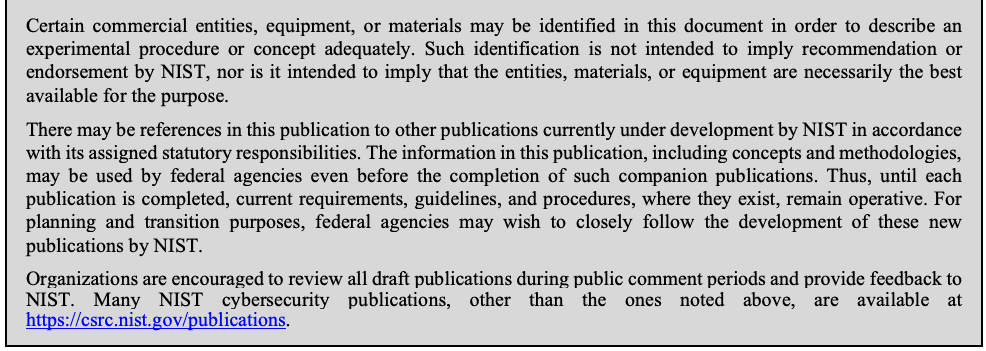
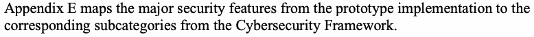
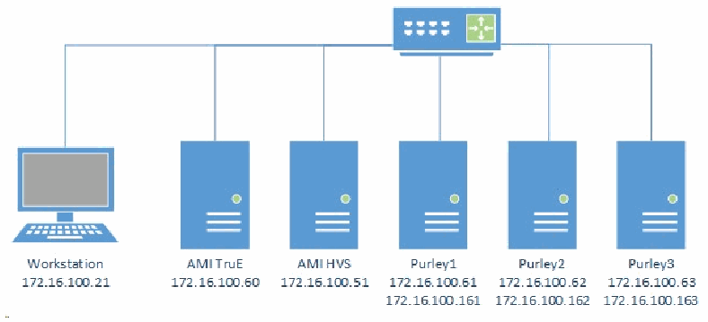
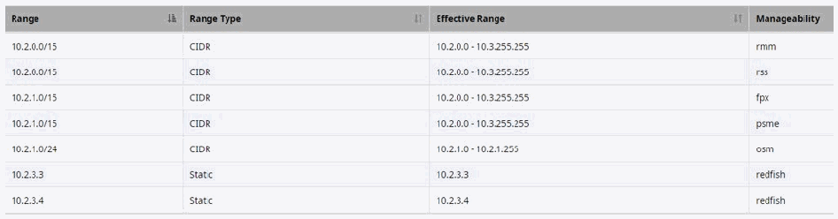
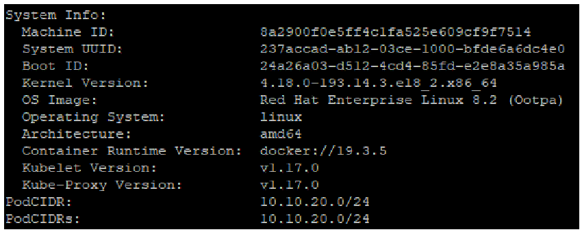
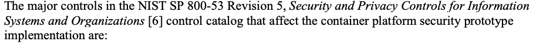

NIST IR 8320A 日本語訳
英語タイトル : Hardware-Enabled Security: Container Platform Security Prototype日本語タイトル : ハードウェア支援セキュリティ：コンテナプラットフォームセキュリティのプロトタイプ
公開日 : 2021-06-17
原文URL : https://csrc.nist.gov/pubs/ir/8320/a/final
翻訳編集 : 自動生成（有志による非公式の日本語訳）, 原文取得日 : 2026-10-31, 訳文 : 584 / 584 ブロック
[要約] NIST IR 8320A は、マルチテナントのクラウド環境でコンテナの展開を保護するための、ハードウェア支援セキュリティの技法と技術に基づくアプローチを説明する報告書です。このアプローチの概念実証の実装（プロトタイプ）についても述べており、このプロトタイプはセキュリティコミュニティ全般にとっての設計図またはテンプレートとなることを意図しています。プロトタイプは、プラットフォームのアテステーションと計測済みワーカーノードの起動、ワークロードの信頼できる配置、アセットタグ付けと信頼できる場所という三つのステージで構成されています。付録では、ハードウェアアーキテクチャと前提条件、プラットフォームの実装として AMI TruE を用いた構成、信頼されたクラウドクラスターのインストールと構成が示されています。
NISTIR 8320A
NISTIR 8320A
Hardware-Enabled Security: Container Platform Security Prototype
ハードウェア支援セキュリティ: コンテナプラットフォームセキュリティのプロトタイプ
Michael Bartock Murugiah Souppaya Jerry Wheeler Tim Knoll Uttam Shetty Ryan Savino Joseprabu Inbaraj Stefano Righi Karen Scarfone
Michael Bartock Murugiah Souppaya Jerry Wheeler Tim Knoll Uttam Shetty Ryan Savino Joseprabu Inbaraj Stefano Righi Karen Scarfone
This publication is available free of charge from: https://doi.org/10.6028/NIST.IR.8320A
本書は次のURLから無料で入手できます: https://doi.org/10.6028/NIST.IR.8320A
NISTIR 8320A
NISTIR 8320A
Hardware-Enabled Security: Container Platform Security Prototype
ハードウェア支援セキュリティ: コンテナプラットフォームセキュリティのプロトタイプ
Michael Bartock
Murugiah Souppaya
Computer Security Division
Information Technology Laboratory
Michael Bartock
Murugiah Souppaya
コンピュータセキュリティ部門
情報技術研究所
Joseprabu Inbaraj
Stefano Righi
AMI
Atlanta, GA
Joseprabu Inbaraj
Stefano Righi
AMI
ジョージア州アトランタ
Jerry Wheeler
Tim Knoll
Uttam Shetty
Ryan Savino
Intel Corporation
Santa Clara, CA
Jerry Wheeler
Tim Knoll
Uttam Shetty
Ryan Savino
Intel Corporation
カリフォルニア州サンタクララ
Karen Scarfone
Scarfone Cybersecurity
Clifton, VA
Karen Scarfone
Scarfone Cybersecurity
バージニア州クリフトン
This publication is available free of charge from: https://doi.org/10.6028/NIST.IR.8320A
本書は次のURLから無料で入手できます: https://doi.org/10.6028/NIST.IR.8320A
June 2021
2021年6月
U.S. Department of Commerce Gina Raimondo, Secretary
米国商務省 Gina Raimondo 長官
National Institute of Standards and Technology
米国国立標準技術研究所
James K. Olthoff, Performing the Non-Exclusive Functions and Duties of the Under Secretary of Commerce for Standards and Technology & Director, National Institute of Standards and Technology
James K. Olthoff、商務次官（標準・技術担当）兼国立標準技術研究所所長の非専属的な職務および任務を代行
National Institute of Standards and Technology Interagency or Internal Report 8320A 48 pages (June 2021)
米国国立標準技術研究所省庁間報告書または内部報告書 8320A 48ページ（2021年6月）
This publication is available free of charge from: https://doi.org/10.6028/NIST.IR.8320A
本書は次のURLから無料で入手できます: https://doi.org/10.6028/NIST.IR.8320A
Certain commercial entities, equipment, or materials may be identified in this document in order to describe an experimental procedure or concept adequately. Such identification is not intended to imply recommendation or endorsement by NIST, nor is it intended to imply that the entities, materials, or equipment are necessarily the best available for the purpose.
原本PDFの抜粋画像

本書では、実験の手順や概念を適切に説明するために、特定の商業的主体、機器、または資材を挙げている場合があります。こうした記載は、NIST による推奨や承認を意味するものではなく、挙げられた主体、資材、または機器がその目的に最適であることを意味するものでもありません。
There may be references in this publication to other publications currently under development by NIST in accordance with its assigned statutory responsibilities. The information in this publication, including concepts and methodologies, may be used by federal agencies even before the completion of such companion publications. Thus, until each publication is completed, current requirements, guidelines, and procedures, where they exist, remain operative. For planning and transition purposes, federal agencies may wish to closely follow the development of these new publications by NIST.
本書には、NIST が法定の責務に従って現在策定中の他の刊行物への言及が含まれる場合があります。それらの関連刊行物が完成する前であっても、本書の情報（概念および方法論を含む）を連邦機関が利用してもよいです。したがって、各刊行物が完成するまでは、現行の要件、ガイドライン、および手順が存在する場合には、それらが引き続き有効です。計画および移行のため、連邦機関は、NIST によるこれらの新しい刊行物の策定状況を注意深く追うことを検討してもよいです。
Organizations are encouraged to review all draft publications during public comment periods and provide feedback to NIST. Many NIST cybersecurity publications, other than the ones noted above, are available at https://csrc.nist.gov/publications.
組織は、すべての草案について、パブリックコメント期間中に内容を確認し、NIST にフィードバックを提供することが推奨されます。上記以外の NIST のサイバーセキュリティ関連刊行物の多くは、https://csrc.nist.gov/publications で入手できます。
Comments on this publication may be submitted to: National Institute of Standards and Technology Attn: Applied Cybersecurity Division, Information Technology Laboratory 100 Bureau Drive (Mail Stop 2000) Gaithersburg, MD 20899-2000 Email: hwsec@nist.gov
本書へのコメントは次の宛先に提出できます: 米国国立標準技術研究所 宛先: 応用サイバーセキュリティ部門、情報技術研究所 100 Bureau Drive (Mail Stop 2000) Gaithersburg, MD 20899-2000 電子メール: hwsec@nist.gov
All comments are subject to release under the Freedom of Information Act (FOIA).
すべてのコメントは、情報自由法（FOIA）に基づいて公開される場合があります。
Reports on Computer Systems Technology
コンピュータシステム技術に関する報告書
The Information Technology Laboratory (ITL) at the National Institute of Standards and Technology (NIST) promotes the U.S. economy and public welfare by providing technical leadership for the Nation’s measurement and standards infrastructure. ITL develops tests, test methods, reference data, proof of concept implementations, and technical analyses to advance the development and productive use of information technology. ITL’s responsibilities include the development of management, administrative, technical, and physical standards and guidelines for the cost-effective security and privacy of other than national security-related information in federal information systems.
米国国立標準技術研究所（NIST）の情報技術研究所（ITL）は、国の測定および標準のインフラストラクチャに技術的なリーダーシップを提供することにより、米国経済と公共の福祉を促進しています。ITL は、情報技術の開発と生産的な利用を推進するため、テスト、テスト方法、参照データ、概念実証の実装、および技術分析を開発しています。ITL の責務には、連邦情報システムにおける国家安全保障に関係しない情報のセキュリティとプライバシーを費用対効果よく確保するための、管理上、運用上、技術上、および物理上の標準とガイドラインの策定が含まれます。
Abstract
要旨
In today’s cloud data centers and edge computing, attack surfaces have significantly increased, hacking has become industrialized, and most security control implementations are not coherent or consistent. The foundation of any data center or edge computing security strategy should be securing the platform on which data and workloads will be executed and accessed. The physical platform represents the first layer for any layered security approach and provides the initial protections to help ensure that higher-layer security controls can be trusted. This report explains an approach based on hardware-enabled security techniques and technologies for safeguarding container deployments in multi-tenant cloud environments. It also describes a proof-of-concept implementation of the approach—a prototype—that is intended to be a blueprint or template for the general security community.
今日のクラウドデータセンターとエッジコンピューティングでは、攻撃対象領域が大幅に拡大し、ハッキングは産業化し、ほとんどのセキュリティ管理策の実装には一貫性や整合性がありません。データセンターやエッジコンピューティングのセキュリティ戦略の基盤は、データとワークロードが実行され、アクセスされるプラットフォームを保護することであるべきです。物理プラットフォームは、あらゆる多層型セキュリティアプローチの第一層であり、上位層のセキュリティ管理策を信頼できるようにするための初期保護を提供します。本報告書は、マルチテナントのクラウド環境におけるコンテナ展開を保護するための、ハードウェア支援型セキュリティの技法と技術に基づくアプローチを説明します。また、このアプローチの概念実証の実装、すなわちプロトタイプについても説明します。このプロトタイプは、セキュリティコミュニティ全般の設計図またはテンプレートとなることを意図しています。
Keywords
キーワード
container; hardware-enabled security; hardware root of trust; platform security; trusted compute pool; virtualization.
コンテナ; ハードウェア支援型セキュリティ; ハードウェアの信頼の起点; プラットフォームセキュリティ; 信頼できるコンピューティングプール; 仮想化。
Acknowledgments
謝辞
The authors thank everyone who contributed their time and expertise to the development of this report, in particular Eric Johnson, Muthukkumaran Ramalingam, and Madhan B. Santharam from AMI.
著者らは、本報告書の作成に時間と専門知識を提供してくださったすべての方々、特に AMI の Eric Johnson、Muthukkumaran Ramalingam、Madhan B. Santharam に感謝します。
Audience
想定読者
The primary audiences for this report are security professionals, such as security engineers and architects; system administrators and other information technology (IT) professionals for cloud service providers; and hardware, firmware, and software developers who may be able to leverage hardware-enabled security techniques and technologies to improve platform security for container deployments in multi-tenant cloud environments.
本報告書の主な想定読者は、セキュリティエンジニアやアーキテクトなどのセキュリティ専門家、クラウドサービスプロバイダーのシステム管理者およびその他の情報技術（IT）専門家、ならびに、ハードウェア支援型セキュリティの技法と技術を活用して、マルチテナントのクラウド環境におけるコンテナ展開のプラットフォームセキュリティを向上させることができるハードウェア、ファームウェア、ソフトウェアの開発者です。
Trademark Information
商標情報
All registered trademarks or other trademarks belong to their respective organizations.
登録商標およびその他の商標は、それぞれの組織に帰属します。
Patent Disclosure Notice
特許開示に関する通知
NOTICE: ITL has requested that holders of patent claims whose use may be required for compliance with the guidance or requirements of this publication disclose such patent claims to ITL. However, holders of patents are not obligated to respond to ITL calls for patents and ITL has not undertaken a patent search in order to identify which, if any, patents may apply to this publication.
通知: ITL は、本書のガイダンスまたは要件への準拠に使用が必要となる可能性のある特許請求の範囲の保有者に対し、当該特許請求の範囲を ITL に開示するよう求めています。ただし、特許の保有者には ITL の特許開示要請に応じる義務はなく、ITL は、本書に適用される可能性のある特許があるかどうかを特定するための特許調査を行っていません。
As of the date of publication and following call(s) for the identification of patent claims whose use may be required for compliance with the guidance or requirements of this publication, no such patent claims have been identified to ITL.
公表日の時点で、本書のガイダンスまたは要件への準拠に使用が必要となる可能性のある特許請求の範囲の特定を求めた後も、そのような特許請求の範囲は ITL に特定されていません。
No representation is made or implied by ITL that licenses are not required to avoid patent infringement in the use of this publication.
本書の利用にあたり特許侵害を避けるためにライセンスが不要であるという表明を、ITL は明示的にも黙示的にも行いません。
Table of Contents
目次
List of Tables
表の一覧
List of Figures
図の一覧
1 Introduction
1 はじめに
1.1 Purpose and Scope
1.1 目的と適用範囲
The purpose of this publication is to describe an approach for safeguarding application container deployments in multi-tenant cloud environments. This publication first explains selected security challenges involving Infrastructure as a Service (IaaS) cloud computing technologies and geolocation in the form of resource asset tags. It then describes a proof-of-concept implementation—a prototype—that was designed to address those challenges. The publication provides sufficient details about the prototype implementation so that organizations can reproduce it if desired. The publication is intended to be a blueprint or template that can be used by the general security community to validate and implement the described implementation.
本書の目的は、マルチテナントのクラウド環境でアプリケーションコンテナの展開を保護するための手法を説明することです。本書はまず、Infrastructure as a Service（IaaS）クラウドコンピューティング技術と、リソースのアセットタグという形でのジオロケーションに関する、いくつかのセキュリティ上の課題を説明します。次に、それらの課題に対処するために設計された概念実証の実装（プロトタイプ）を説明します。本書は、希望する組織が再現できるよう、プロトタイプの実装について十分な詳細を示しています。本書は、一般のセキュリティコミュニティが、記載された実装を検証し実装するために使用できる設計図またはテンプレートとなることを意図しています。
It is important to note that the prototype implementation presented in this publication is only one possible way to solve the security challenges. It is not intended to preclude the use of other products, services, techniques, etc. that can also solve the problem adequately, nor is it intended to preclude the use of any cloud products or services not specifically mentioned in this publication.
本書で示すプロトタイプの実装は、セキュリティ上の課題を解決する方法の一つにすぎないことに注意することが重要です。課題を同様に適切に解決できる他の製品、サービス、技術などの使用を妨げることを意図したものではなく、本書で特に言及していないクラウド製品やサービスの使用を妨げることを意図したものでもありません。
This publication builds upon the terminology and concepts described in NIST Interagency or Internal Report (IR) 8320, Hardware-Enabled Security: Enabling a Layered Approach to Platform Security for Cloud and Edge Computing Use Cases [1]. Reading that report is a prerequisite for reading this publication because it explains the concepts and defines key terminology used in this publication.
本書は、NIST Interagency or Internal Report (IR) 8320, Hardware-Enabled Security: Enabling a Layered Approach to Platform Security for Cloud and Edge Computing Use Cases [1] で説明されている用語と概念を土台としています。この報告書は、本書で使用する概念を説明し、主要な用語を定義しているため、本書を読むための前提として、先に読む必要があります。
1.2 Terminology
1.2 用語
For consistency with related NIST reports, this report uses the following definitions for trust-related terms:
関連する NIST の報告書との一貫性のため、本報告書では、信頼に関する用語について次の定義を用います。
•Trust: “The confidence one element has in another that the second element will behave as expected.”1
•信頼（Trust）: 「ある要素が、別の要素が期待どおりに動作すると確信していること。」1
•Trusted: An element that another element relies upon to fulfill critical requirements on its behalf.
•信頼される（Trusted）: 別の要素が、自身に代わって重要な要件を満たすために依拠する要素。
•Trusted boot: A system boot where aspects of the hardware and firmware are measured and compared against known good values to verify their integrity and thus their trustworthiness.
•トラステッドブート（Trusted boot）: ハードウェアとファームウェアの側面を計測し、既知の正しい値と比較して、その完全性と信頼性を検証するシステムの起動。
•Trustworthy: Worthy of being trusted to fulfill whatever critical requirements may be needed.2
•信頼に値する（Trustworthy）: 必要となるあらゆる重要な要件を満たすものとして、信頼するに値すること。2
1.3 Document Structure
1.3 文書の構成
This document is organized into the following sections and appendices:
本書は、次の節と付録で構成されています。
•Section 2 defines the problem (use case) to be solved.
•第 2 章では、解決すべき問題（ユースケース）を定義します。
•Sections 3, 4, and 5 describe the three stages of the prototype implementation:
•第 3、4、5 章では、プロトタイプ実装の 3 つのステージを説明します。
•Stage 0: Platform attestation and measured worker node launch
•ステージ 0: プラットフォームのアテステーションと計測済みワーカーノードの起動
•Stage 1: Trusted placement of workloads
•ステージ 1: ワークロードの信頼できる配置
•Stage 2: Asset tagging and trusted location
•ステージ 2: アセットタグ付けと信頼できる場所
•The References sections provides references for the document.
•「参考文献」の各節には、本書の参考文献が掲載されています。
•Appendix A provides an overview of the high-level hardware architecture of the prototype implementation, as well as details on how Intel platforms implement hardware modules and enhanced hardware-based security functions.
•付録 A では、プロトタイプ実装の高レベルのハードウェアアーキテクチャの概要と、Intel プラットフォームがハードウェアモジュールとハードウェアに基づく強化されたセキュリティ機能をどのように実装しているかの詳細を示します。
•Appendix B contains supplementary information provided by AMI describing all the required components and steps required to set up the prototype implementation.
•付録 B には、AMI が提供する補足情報として、プロトタイプ実装の構築に必要なすべてのコンポーネントと手順を記載しています。
•Appendix C contains supplementary information describing all the required components and steps required to set up the prototype implementation for Kubernetes.
•付録 C には、Kubernetes 向けのプロトタイプ実装の構築に必要なすべてのコンポーネントと手順を説明する補足情報を記載しています。
•Appendix D lists the major controls from NIST Special Publication (SP) 800-53 Revision 5, Security and Privacy Controls for Information Systems and Organizations that affect container platform security prototype implementation.
•付録 D では、コンテナプラットフォームセキュリティのプロトタイプ実装に影響する、NIST Special Publication (SP) 800-53 Revision 5, Security and Privacy Controls for Information Systems and Organizations の主要な管理策を挙げます。
•Appendix E maps the major security features from the prototype implementation to the corresponding subcategories from the Cybersecurity Framework.
原本PDFの抜粋画像

•付録 E では、プロトタイプ実装の主要なセキュリティ機能を、サイバーセキュリティフレームワークの対応するサブカテゴリにマッピングします。
•Appendix F lists and defines acronyms and other abbreviations used in the document.
•付録 F では、本書で使用する頭字語およびその他の略語を挙げて定義します。
2 Prototype Implementation
2 プロトタイプの実装
This section defines the prototype implementation. Section 2.1 explains the basics of the objective. Section 2.2 provides more details, outlining all of the intermediate goals that must be met in order to achieve the desired prototype implementation. These requirements are grouped into three stages of the use case, each of which is examined more closely in Sections 2.2.1 through 2.2.3, respectively.
本章ではプロトタイプの実装を定義します。2.1 節では目標の基本を説明します。2.2 節では詳細を示し、望ましいプロトタイプの実装を達成するために満たさなければならない中間的なゴールをすべて概説します。これらの要件はユースケースの 3 つのステージにまとめられており、それぞれを 2.2.1 節から 2.2.3 節で順に詳しく検討します。
2.1 Objective
2.1 目標
Shared cloud computing technologies are designed to be highly agile and flexible, transparently using whatever resources are available to process container deployments for their customers [2]. However, there are security and privacy concerns with allowing unrestricted container deployment orchestration. Whenever multiple container deployments are present on a single cloud server, there is a need to segregate those deployments from each other so that they do not interfere with each other, gain access to each other’s sensitive data, or otherwise compromise the security or privacy of the containers. Imagine two rival companies with container deployments on the same server; each company would want to ensure that the server can be trusted to protect their information from the other company. Similarly, a single organization might have multiple container deployments that need to be kept separate because of differing security requirements and needs for each app.
共有クラウドコンピューティング技術は、非常に機敏で柔軟になるよう設計されており、顧客のコンテナ展開を処理するために、利用可能なあらゆるリソースを透過的に使用します [2]。しかし、コンテナ展開のオーケストレーションを無制限に許可することには、セキュリティとプライバシー上の懸念があります。1 台のクラウドサーバー上に複数のコンテナ展開が存在する場合は常に、それらの展開が互いに干渉せず、互いの機微なデータにアクセスせず、その他の形でコンテナのセキュリティやプライバシーを侵害しないように、展開どうしを分離する必要があります。競合する 2 社が同じサーバー上にコンテナ展開を持っている状況を想像してください。それぞれの企業は、そのサーバーが、自社の情報を他社から保護することを信頼できるようにしたいと考えるでしょう。同様に、1 つの組織が、アプリごとのセキュリティ要件やニーズが異なるために、互いに分離しておく必要のある複数のコンテナ展開を持つ場合もあります。
Another concern with shared cloud computing is that workloads could move from cloud servers located in one country to servers located in another country. Each country has its own laws for data security, privacy, and other aspects of information technology (IT). Because the requirements of these laws may conflict with an organization’s policies or mandates (e.g., laws, regulations), an organization may decide that it needs to restrict which cloud servers it uses based on their location. A common desire is to only use cloud servers physically located within the same country as the organization, or physically located in the same country as the origin of the information. Determining the approximate physical location of an object, such as a cloud computing server, is generally known as geolocation. Geolocation can be accomplished in many ways, with varying degrees of accuracy, but typical geolocation methods are not secured and are enforced through management and operational controls that cannot be automated or scaled. Therefore, typical geolocation methods cannot be trusted to meet cloud security needs.
共有クラウドコンピューティングのもう一つの懸念は、ワークロードが、ある国にあるクラウドサーバーから別の国にあるサーバーへ移動する可能性があることです。各国には、データセキュリティ、プライバシー、その他の情報技術（IT）の側面に関する独自の法律があります。これらの法律の要件は、組織のポリシーや命令（例: 法律、規制）と矛盾する可能性があるため、組織は、所在地に基づいて使用するクラウドサーバーを制限する必要があると判断する場合があります。よくある要望は、組織と同じ国に物理的に所在するクラウドサーバーのみ、または情報の発生元と同じ国に物理的に所在するクラウドサーバーのみを使用することです。クラウドコンピューティングサーバーなどの物体のおおよその物理的位置を判断することは、一般にジオロケーションと呼ばれます。ジオロケーションは精度の異なるさまざまな方法で実現できますが、一般的なジオロケーションの方法は保護されておらず、自動化や拡張ができない管理策および運用管理策によって強制されています。したがって、一般的なジオロケーションの方法は、クラウドのセキュリティ上のニーズを満たすものとして信頼できません。
The motivation behind this use case is to improve the security and accelerate the adoption of cloud computing technologies by establishing an automated, hardware root-of-trust method for enforcing and monitoring platform integrity and geolocation restrictions for cloud servers. A hardware root-of-trust is an inherently trusted combination of hardware and firmware responsible for measuring the integrity of the platform and geolocation information in the form of an asset tag. The measurements taken by the hardware root-of-trust are stored in tamper-resistant hardware, and are securely transmitted using cryptographic keys unique to that tamper-resistant hardware. This information is accessed by management and security tools using cryptographic protocols to assert the integrity of the platform and confirm the location of the host.
このユースケースの動機は、クラウドサーバーのプラットフォームの完全性とジオロケーションの制限を強制し監視する、自動化されたハードウェアルートオブトラストの方法を確立することで、クラウドコンピューティング技術のセキュリティを向上させ、その採用を加速させることです。ハードウェアルートオブトラストとは、本質的に信頼されるハードウェアとファームウェアの組み合わせであり、プラットフォームの完全性と、アセットタグという形でのジオロケーション情報を計測する役割を担います。ハードウェアルートオブトラストが取得した計測値は、耐タンパー性を備えたハードウェアに保存され、その耐タンパー性ハードウェア固有の暗号鍵を用いて安全に送信されます。管理ツールとセキュリティツールは暗号プロトコルを用いてこの情報にアクセスし、プラットフォームの完全性を確認してホストの場所を確かめます。
This use case builds on earlier work documented in NIST IR 7904, Trusted Geolocation in the Cloud: Proof of Concept Implementation [3].
このユースケースは、NIST IR 7904, Trusted Geolocation in the Cloud: Proof of Concept Implementation [3] に記載された先行の取り組みを土台としています。
2.2 Goals
2.2 ゴール
Using trusted compute pools (described in Section 3) is a leading approach for aggregating trusted systems and segregating them from untrusted resources, which results in the separation of higher-value, more sensitive workloads from commodity application and data workloads. The principles of operation are to:
トラステッドコンピュートプール（3 章で説明）の使用は、信頼されたシステムを集約し、信頼されないリソースから分離するための有力な手法です。その結果、より価値が高く機微なワークロードが、汎用的なアプリケーションやデータのワークロードから分離されます。運用の原則は次のとおりです。
1.Create a part of the cloud to meet the specific and varying security requirements of users.
1.ユーザーの特定かつ多様なセキュリティ要件を満たすクラウドの一部を作成します。
2.Control access to that portion of the cloud so that the correct applications (workloads) get deployed there.
2.クラウドのその部分へのアクセスを制御し、正しいアプリケーション（ワークロード）がそこに展開されるようにします。
3.Enable audits of that portion of the cloud so that users can verify compliance.
3.クラウドのその部分の監査を可能にし、ユーザーがコンプライアンスを検証できるようにします。
These trusted compute pools allow IT to gain the benefits of the dynamic cloud environment while still enforcing higher levels of protections for their more critical workloads.
これらのトラステッドコンピュートプールにより、IT 部門は、動的なクラウド環境の利点を得ながら、より重要なワークロードにはより高いレベルの保護を適用できます。
The ultimate goal is to be able to use “trust” as a logical boundary for deploying workloads on server platforms within a cloud. This goal is dependent on smaller prerequisite goals described as stages, which can be thought of as requirements that the solution must meet. Because of the number of prerequisites, they have been grouped into three stages:
最終的なゴールは、クラウド内のサーバープラットフォームにワークロードを展開する際の論理的な境界として「信頼」を使用できるようにすることです。このゴールは、ステージとして説明するより小さな前提ゴールに依存しており、これらはソリューションが満たさなければならない要件と考えることができます。前提が多いため、次の 3 つのステージにまとめています。
•Platform attestation and measured worker node launch. This ensures that the integrity of the cloud server platform is measured and available for the subsequent stages.
•プラットフォームのアテステーションと計測済みワーカーノードの起動。これにより、クラウドサーバープラットフォームの完全性が計測され、後続のステージで利用できるようになります。
1.Trusted placement of workloads. This stage allows container deployments to be orchestrated to launch only on trusted server platforms within a cloud.
1.ワークロードの信頼できる配置。このステージでは、クラウド内の信頼されたサーバープラットフォーム上でのみコンテナ展開が起動されるように、オーケストレーションできるようになります。
2.Asset tagging and trusted location. This stage allows container deployments to be launched only on trusted server platforms within a cloud, taking into consideration qualitative asset tag restrictions (for example, location information).
2.アセットタグ付けと信頼できる場所。このステージでは、定性的なアセットタグの制限（たとえば、場所の情報）を考慮したうえで、クラウド内の信頼されたサーバープラットフォーム上でのみコンテナ展開を起動できるようになります。
The prerequisite goals for each stage, along with more general information on each stage, are explained below.
各ステージの前提ゴールと、各ステージに関するより一般的な情報を、以下で説明します。
2.2.1 Stage 0: Platform attestation and measured worker node launch
2.2.1 ステージ 0: プラットフォームのアテステーションと計測済みワーカーノードの起動
A fundamental component of a solution is having some assurance that the platform the container deployment is running on can be trusted. If the platform is not trustworthy, then not only is it putting the tenant’s application and data at greater risk of compromise, but also there is no assurance that the claimed asset tag of the cloud server is accurate. Having basic assurance of trustworthiness is the initial stage in the solution.
ソリューションの基本的な構成要素は、コンテナ展開が実行されているプラットフォームが信頼できるという何らかの保証を得ることです。プラットフォームが信頼に値しなければ、テナントのアプリケーションとデータが危殆化するリスクが高まるだけでなく、クラウドサーバーに付けられたアセットタグが正確であるという保証もありません。信頼性の基本的な保証を得ることが、ソリューションの最初のステージです。
Stage 0 includes the following prerequisite goals:
ステージ 0 には、次の前提ゴールが含まれます。
1.Configure a cloud server platform as being trusted. The “cloud server platform” includes the hardware configuration (e.g., BIOS integrity), operating system (OS) configuration (boot loader and OS kernel configuration and integrity), and the integrity of the container runtime. This also includes the varying hardware security technologies enabled on the server. These chain of trust (CoT) technologies provide platform integrity verification. Additional technologies and details can be found in the aforementioned NISTIR 8320 [1] and are discussed in Section 3.2.
1.クラウドサーバープラットフォームを、信頼されたものとして構成します。「クラウドサーバープラットフォーム」には、ハードウェア構成（例: BIOS の完全性）、オペレーティングシステム（OS）の構成（ブートローダーと OS カーネルの構成および完全性）、コンテナランタイムの完全性が含まれます。これには、サーバー上で有効化されたさまざまなハードウェアセキュリティ技術も含まれます。これらの信頼の連鎖（CoT）技術は、プラットフォームの完全性の検証を提供します。追加の技術と詳細は、前述の NISTIR 8320 [1] にあり、3.2 節で説明します。
2.Before each container worker node launch, verify (measure) the trustworthiness of the cloud server platform. The items configured in goal 1 (BIOS, OS, container runtime) need to have their configurations verified against previous measurements before launching the container runtime to ensure that the assumed level of trust is still in place.
2.コンテナのワーカーノードを起動する前に毎回、クラウドサーバープラットフォームの信頼性を検証（計測）します。ゴール 1 で構成した項目（BIOS、OS、コンテナランタイム）は、想定した信頼のレベルが維持されていることを確認するため、コンテナランタイムを起動する前に、構成を以前の計測値と照合して検証する必要があります。
3.During container runtime execution, periodically audit the trustworthiness of the cloud server platform. This periodic audit is essentially the same check as that performed as goal 2, except that it is performed frequently while the container runtime is executing. Ideally this checking would be part of continuous monitoring.
3.コンテナランタイムの実行中に、クラウドサーバープラットフォームの信頼性を定期的に監査します。この定期監査は、ゴール 2 として実施される確認と本質的に同じですが、コンテナランタイムの実行中に頻繁に実施されます。理想的には、この確認は継続的監視の一部となります。
Achieving all of these goals will not prevent attacks from succeeding, but it will cause unauthorized changes to the cloud platform to be detected more rapidly than they otherwise would have been. This prevents new container deployments with trust requirements from being launched on the compromised platform.
これらのゴールをすべて達成しても、攻撃の成功を防げるわけではありませんが、クラウドプラットフォームへの不正な変更を、そうでない場合よりも迅速に検知できるようになります。これにより、信頼の要件を持つ新しいコンテナ展開が、危殆化したプラットフォーム上で起動されることを防ぎます。
For more information on the technical topics being addressed by these goals, see the following NIST publications:
これらのゴールが扱う技術的なトピックの詳細は、次の NIST 刊行物を参照してください。
•NIST SP 800-128, Guide for Security-Focused Configuration Management of Information Systems https://doi.org/10.6028/NIST.SP.800-128
•NIST SP 800-128, Guide for Security-Focused Configuration Management of Information Systems https://doi.org/10.6028/NIST.SP.800-128
•NIST SP 800-137, Information Security Continuous Monitoring for Federal Information Systems and Organizations https://doi.org/10.6028/NIST.SP.800-137
•NIST SP 800-137, Information Security Continuous Monitoring for Federal Information Systems and Organizations https://doi.org/10.6028/NIST.SP.800-137
•NIST SP 800-144, Guidelines on Security and Privacy in Public Cloud Computing https://doi.org/10.6028/NIST.SP.800-144
•NIST SP 800-144, Guidelines on Security and Privacy in Public Cloud Computing https://doi.org/10.6028/NIST.SP.800-144
•NIST SP 800-147B, BIOS Protection Guidelines for Servers https://doi.org/10.6028/NIST.SP.800-147B
•NIST SP 800-147B, BIOS Protection Guidelines for Servers https://doi.org/10.6028/NIST.SP.800-147B
•Draft NIST SP 800-155, BIOS Integrity Measurement Guidelines https://csrc.nist.gov/publications/detail/sp/800-155/draft
•Draft NIST SP 800-155, BIOS Integrity Measurement Guidelines https://csrc.nist.gov/publications/detail/sp/800-155/draft
•NIST SP 800-190, Application Container Security Guide https://doi.org/10.6028/NIST.SP.800-190
•NIST SP 800-190, Application Container Security Guide https://doi.org/10.6028/NIST.SP.800-190
2.2.2 Stage 1: Trusted placement of workloads
2.2.2 ステージ 1: ワークロードの信頼できる配置
Once stage 0 has been successfully completed, the next objective is to be able to orchestrate the placement of workloads to launch only on trusted platforms. Workload placement is a key attribute of cloud computing, improving scalability and reliability. The purpose of this stage is to ensure that any server that a workload is launched on will meet the required level of security assurance based on the workload security policy.
ステージ 0 が正常に完了したら、次の目的は、ワークロードの配置をオーケストレーションし、信頼されたプラットフォーム上でのみ起動されるようにすることです。ワークロードの配置は、クラウドコンピューティングの重要な特性であり、スケーラビリティと信頼性を向上させます。このステージの目的は、ワークロードが起動されるサーバーが、ワークロードのセキュリティポリシーに基づいて必要なレベルのセキュリティ保証を満たすことを確実にすることです。
Stage 1 includes the following prerequisite goal:
ステージ 1 には、次の前提ゴールが含まれます。
1.Deploy workloads only to cloud servers with trusted platforms. This basically means that you perform stage 0, goal 3 (auditing platform trustworthiness) and only deploy a workload to the cloud server if the audit demonstrates that the platform is trustworthy.
1.信頼されたプラットフォームを持つクラウドサーバーにのみ、ワークロードを展開します。これは基本的に、ステージ 0 のゴール 3（プラットフォームの信頼性の監査）を実施し、監査によってプラットフォームが信頼に値することが示された場合にのみ、そのクラウドサーバーにワークロードを展開するということです。
Achieving this goal ensures that the workloads are deployed to trusted platforms, thus reducing the chance of workload compromise.
このゴールを達成することで、ワークロードが信頼されたプラットフォームに展開されることが確実になり、ワークロードが危殆化する可能性が低減されます。
For more information on the technical topics being addressed by these goals, see the following NIST publications:
これらのゴールが扱う技術的なトピックの詳細は、次の NIST 刊行物を参照してください。
•Draft NIST IR 8320, Hardware-Enabled Security: Enabling a Layered Approach to Platform Security for Cloud and Edge Computing Use Cases https://doi.org/10.6028/NIST.IR.8320-draft
•Draft NIST IR 8320, Hardware-Enabled Security: Enabling a Layered Approach to Platform Security for Cloud and Edge Computing Use Cases https://doi.org/10.6028/NIST.IR.8320-draft
•NIST SP 800-137, Information Security Continuous Monitoring for Federal Information Systems and Organizations https://doi.org/10.6028/NIST.SP.800-137
•NIST SP 800-137, Information Security Continuous Monitoring for Federal Information Systems and Organizations https://doi.org/10.6028/NIST.SP.800-137
•NIST SP 800-144, Guidelines on Security and Privacy in Public Cloud Computing https://doi.org/10.6028/NIST.SP.800-144
•NIST SP 800-144, Guidelines on Security and Privacy in Public Cloud Computing https://doi.org/10.6028/NIST.SP.800-144
•NIST SP 800-147B, BIOS Protection Guidelines for Servers https://doi.org/10.6028/NIST.SP.800-147B
•NIST SP 800-147B, BIOS Protection Guidelines for Servers https://doi.org/10.6028/NIST.SP.800-147B
•Draft NIST SP 800-155, BIOS Integrity Measurement Guidelines https://csrc.nist.gov/publications/detail/sp/800-155/draft
•Draft NIST SP 800-155, BIOS Integrity Measurement Guidelines https://csrc.nist.gov/publications/detail/sp/800-155/draft
2.2.3 Stage 2: Asset tagging and trusted location
2.2.3 ステージ 2: アセットタグ付けと信頼できる場所
The next stage builds upon stage 1 by adding the ability to continuously monitor and enforce asset tag restrictions.
次のステージは、ステージ 1 を土台に、アセットタグの制限を継続的に監視し強制する機能を追加します。
Stage 2 includes the following prerequisite goals:
ステージ 2 には、次の前提ゴールが含まれます。
1.Have trusted asset tag information for each trusted platform instance. This information would be stored within the cloud server’s cryptographic module (as a cryptographic hash within the hardware cryptographic module) so that it could be verified and audited readily.
1.信頼できるプラットフォームの各インスタンスについて、信頼されたアセットタグ情報を保持します。この情報は、容易に検証および監査できるよう、クラウドサーバーの暗号モジュール内（ハードウェア暗号モジュール内の暗号ハッシュとして）に保存されます。
2.Provide configuration management and policy enforcement mechanisms for trusted platforms that include enforcement of asset tag restrictions. This goal builds upon stage 1, goal 1 (deploy workloads only to cloud servers with trusted platforms); it enhances stage 2, goal 1 by adding an asset tag check to the server to launch the workload on.
2.信頼されたプラットフォームの構成管理およびポリシー強制の仕組みを提供します。これにはアセットタグの制限の強制が含まれます。このゴールはステージ 1 のゴール 1（信頼されたプラットフォームを持つクラウドサーバーにのみワークロードを展開する）を土台とし、ワークロードの起動先サーバーに対するアセットタグの確認を追加することで、ステージ 2 のゴール 1 を強化します。
3.During workload orchestration, periodically audit the asset tag of the cloud server platform against asset tag policy restrictions. This goal is built upon stage 0, goal 3 (auditing platform trustworthiness), but it is specifically auditing the asset tag information against the policies for asset tag to ensure that the server’s asset tagging does not violate the policies.
3.ワークロードのオーケストレーション中に、クラウドサーバープラットフォームのアセットタグを、アセットタグに関するポリシー上の制限に照らして定期的に監査します。このゴールはステージ 0 のゴール 3（プラットフォームの信頼性の監査）を土台としていますが、サーバーのアセットタグ付けがポリシーに違反していないことを確実にするため、アセットタグ情報をアセットタグに関するポリシーに照らして監査するものです。
Achieving these goals ensures that the workloads are not launched on a server in an unsuitable boundary location. This avoids issues caused by clouds spanning different physical locations (e.g., regulations, sensitivity levels, countries or states with different data security and privacy laws).
これらのゴールを達成することで、ワークロードが不適切な境界の場所にあるサーバー上で起動されないことが確実になります。これにより、クラウドが異なる物理的な場所にまたがることで生じる問題（例: 規制、機微性のレベル、データセキュリティおよびプライバシーに関する法律が異なる国や州）を回避できます。
For more information on the technical topics being addressed by these goals, see the following NIST publications:
これらのゴールが扱う技術的なトピックの詳細は、次の NIST 刊行物を参照してください。
•NIST SP 800-128, Guide for Security-Focused Configuration Management of Information Systems https://doi.org/10.6028/NIST.SP.800-128
•NIST SP 800-128, Guide for Security-Focused Configuration Management of Information Systems https://doi.org/10.6028/NIST.SP.800-128
•NIST SP 800-137, Information Security Continuous Monitoring for Federal Information Systems and Organizations https://doi.org/10.6028/NIST.SP.800-137
•NIST SP 800-137, Information Security Continuous Monitoring for Federal Information Systems and Organizations https://doi.org/10.6028/NIST.SP.800-137
•NIST SP 800-147B, BIOS Protection Guidelines for Servers https://doi.org/10.6028/NIST.SP.800-147B
•NIST SP 800-147B, BIOS Protection Guidelines for Servers https://doi.org/10.6028/NIST.SP.800-147B
•Draft NIST SP 800-155, BIOS Integrity Measurement Guidelines https://csrc.nist.gov/publications/detail/sp/800-155/draft
•Draft NIST SP 800-155, BIOS Integrity Measurement Guidelines https://csrc.nist.gov/publications/detail/sp/800-155/draft
3 Prototyping Stage 0
3 ステージ 0 のプロトタイプ作成
This section describes stage 0 of the prototype implementation (platform attestation and measured worker node launch).
本章では、プロトタイプ実装のステージ 0（プラットフォームのアテステーションと計測済みワーカーノードの起動）を説明します。
3.1 Solution Overview
3.1 ソリューションの概要
This stage of the use case enables the creation of what are called trusted compute pools. Also known as trusted pools, they are physical or logical groupings of computing hardware in a data center that are tagged with specific and varying security policies, and the access and execution of apps and workloads are monitored, controlled, audited, etc. In this phase of the solution, an attested launch of the platform is deemed as a trusted node and is added to the trusted pool.
ユースケースのこのステージでは、トラステッドコンピュートプールと呼ばれるものを作成できます。トラステッドプールとも呼ばれるこれらは、データセンター内のコンピューティングハードウェアを物理的または論理的にまとめたもので、特定の多様なセキュリティポリシーがタグ付けされ、アプリやワークロードへのアクセスとその実行が監視、制御、監査などされます。ソリューションのこの段階では、アテステーションを受けたプラットフォームの起動が信頼されたノードとみなされ、トラステッドプールに追加されます。
Figure 1 depicts the concept of trusted pools. The resources tagged green indicate trusted ones. Critical policies can be defined such that security-sensitive cloud services can only be launched on these trusted resources.
図 1 は、トラステッドプールの概念を示しています。緑でタグ付けされたリソースは、信頼されたものを示します。セキュリティ上機微なクラウドサービスをこれらの信頼されたリソース上でのみ起動できるように、重要なポリシーを定義できます。
![Diagram of trusted compute pools. On the left, a box “Cloud Subscriber” contains server racks and a circled group of container stacks. A green arrow labeled “Containerized Workload”, below a “Container” box with “APP” and “LIBS” layers, points right to a large box “Cloud Provider”. The Cloud Provider box contains a cloud with three laptops labeled “Cloud Operating Systems”, a disc icon “Verified Infrastructure Software”, a folder “policies” labeled “Cloud Policy Orchestration”, a cloud “Cloud Portal”, a shield icon “Trust Manager”, a server rack with a red dot “Un-trusted Hardware”, a server rack with a green dot “Trusted Hardware”, and stacked blocks “Containerized Workloads”.](assets/ir-8320a/p0016-figure-02.png)
信頼できるコンピュートプールの概念図です。左側の「Cloud Subscriber」の枠にはサーバーラックと、丸で囲んだコンテナの束があります。「APP」「LIBS」の層をもつ「Container」の箱の下に「Containerized Workload」と書かれた緑の矢印があり、右側の大きな枠「Cloud Provider」を指します。Cloud Provider の枠には、3台のノートPCと雲の「Cloud Operating Systems」、ディスクの「Verified Infrastructure Software」、フォルダー「policies」の「Cloud Policy Orchestration」、雲の「Cloud Portal」、盾のアイコンの「Trust Manager」、赤い丸の付いたサーバーラック「Un-trusted Hardware」、緑の丸の付いたサーバーラック「Trusted Hardware」、積み重ねたブロックの「Containerized Workloads」があります。
Figure 1: Concept of Trusted Compute Pools
図 1: トラステッドコンピュートプールの概念
In order to have a trusted launch of the platform, the two key questions that should be answered are:
プラットフォームを信頼できる形で起動するために答えるべき重要な問いは、次の 2 つです。
1.How would the entity needing this information know if a specific platform has the necessary enhanced hardware-based security features enabled and if a specific platform has a defined/compliant OS/platform firmware and container runtime running on it?
1.この情報を必要とする主体は、特定のプラットフォームで、必要な強化されたハードウェアベースのセキュリティ機能が有効になっているか、また、規定された／準拠する OS、プラットフォームファームウェア、コンテナランタイムがそのプラットフォーム上で動作しているかを、どのようにして知るのでしょうか。
2.Why should the entity requesting this information, which in a cloud environment would be a scheduler/orchestrator trying to schedule a workload on a set of available nodes/servers, believe the response from the platform?
2.クラウド環境では、利用可能なノード／サーバーの集合に対してワークロードをスケジューリングしようとするスケジューラー／オーケストレーターに当たる、この情報を要求する主体は、なぜプラットフォームからの応答を信じるべきなのでしょうか。
Attestation provides the definitive answers to these questions. Attestation is the process of providing a digital signature of a set of measurements securely stored in hardware, then having the requestor validate the signature and the set of measurements. Attestation requires roots of trust. The platform has to have a Root-of-Trust for Measurement (RTM) that is implicitly trusted to provide an accurate measurement, and enhanced hardware-based security features provide the RTM. The platform also has to have a Root-of-Trust for Reporting (RTR) and a Root-of-Trust for Storage (RTS), and the same enhanced hardware-based security features provide these.
アテステーションは、これらの問いに決定的な答えを与えます。アテステーションとは、ハードウェアに安全に保存された計測値の集合のデジタル署名を提供し、要求者に署名と計測値の集合を検証させるプロセスです。アテステーションにはルートオブトラストが必要です。プラットフォームには、正確な計測値を提供することを暗黙のうちに信頼される計測のルートオブトラスト（RTM）が必要であり、強化されたハードウェアベースのセキュリティ機能が RTM を提供します。プラットフォームにはまた、報告のルートオブトラスト（RTR）と保管のルートオブトラスト（RTS）も必要であり、同じ強化されたハードウェアベースのセキュリティ機能がこれらを提供します。
The entity that challenged the platform for this information now can make a determination about the trust of the launched platform by comparing the provided set of measurements with “known good/golden” measurements. Managing the “known good” for different platforms and operating systems, and various BIOS software, and ensuring they are protected from tampering and spoofing is a critical IT operations challenge. This capability can be internal to a service provider, or it could be delivered as a service by a trusted third party for service providers and enterprises to use.
プラットフォームにこの情報を求めた主体は、提供された計測値の集合を「既知の正しい／ゴールデン」計測値と比較することで、起動されたプラットフォームの信頼性を判断できます。さまざまなプラットフォーム、オペレーティングシステム、各種の BIOS ソフトウェアに対する「既知の正しい」値を管理し、それらが改ざんやなりすましから保護されるようにすることは、IT 運用上の重要な課題です。この機能は、サービスプロバイダー内部で提供することも、サービスプロバイダーやエンタープライズが利用できるよう、信頼されたサードパーティーがサービスとして提供することもできます。
3.2 Solution Architecture
3.2 ソリューションアーキテクチャ
Figure 2 provides a layered view of the solution system architecture. The indicated servers in the resource pool include a hardware module for storing sensitive keys and measurements. All of the servers depicted in the diagram are configured by the management server.
図 2 は、ソリューションのシステムアーキテクチャを階層的に示しています。リソースプール内の図示されたサーバーには、機微な鍵と計測値を保存するためのハードウェアモジュールが備わっています。図に示したすべてのサーバーは、管理サーバーによって構成されます。
The initial step in instantiating the architecture requires provisioning the server for enhanced hardware-based security features. This requires either physical or remote access to the server to access the BIOS, enable a set of configuration options to use the hardware module (including taking ownership of the module), and activate the enhanced hardware-based security features. This process is highly BIOS and original equipment manufacturer (OEM) dependent. This step is mandatory for a measured launch of the platform.
アーキテクチャをインスタンス化する最初の手順では、強化されたハードウェアベースのセキュリティ機能のためにサーバーをプロビジョニングする必要があります。これには、サーバーへの物理的またはリモートのアクセスにより BIOS にアクセスし、ハードウェアモジュールを使用するための一連の構成オプションを有効にし（モジュールの所有権の取得を含む）、強化されたハードウェアベースのセキュリティ機能を有効化する必要があります。このプロセスは、BIOS と相手先ブランド製造業者（OEM）への依存度が高いものです。この手順は、プラットフォームの計測済み起動に必須です。
The management console provides remote monitoring and management of all servers in this solution architecture. It allows remote configuration of BIOS that are required for a server to be measured and secured. It periodically checks the measurements of all monitored servers and compares them against golden measurements that were taken in pristine condition. When any such measurements do not match, indicating a platform security compromise, it notifies the administrator through email and/or text message. The administrator can then use the management console to take remediation actions, which could include powering down the server or reconfiguring or updating the firmware of the server.
管理コンソールは、このソリューションアーキテクチャ内のすべてのサーバーのリモート監視と管理を提供します。サーバーの計測と保護に必要な BIOS のリモート構成を可能にします。また、監視対象のすべてのサーバーの計測値を定期的に確認し、清浄な状態で取得したゴールデン計測値と比較します。計測値が一致しない場合、プラットフォームのセキュリティが危殆化したことを示すものとして、電子メールやテキストメッセージで管理者に通知します。管理者はその後、管理コンソールを使用して是正措置を講じることができ、これにはサーバーの電源停止や、サーバーのファームウェアの再構成または更新が含まれます。

2つの角の丸い枠が双方向の矢印で結ばれた図です。左の枠は「Worker Nodes」（ワーカーノード）で、3つの積み重ねがあります。それぞれ上から「Kubelet」、「Container Runtime」（コンテナランタイム）、「OS」、最下段のハードウェアの層からなり、最初の2つでは最下段が「Hardware」（ハードウェア）で小さなオレンジ色の「Crypto Module」（暗号モジュール）の箱が付き、3つ目では「Hardware (no crypto module)」（ハードウェア（暗号モジュールなし））です。右の枠は「Control Plane」（コントロールプレーン）で、「Container Orchestration Software」（コンテナオーケストレーションソフトウェア）、「Attestation Service」（アテステーションサービス）、「Management Server」（管理サーバー）の3つの箱があります。
Figure 2: Stage 0 Solution System Architecture
図 2: ステージ 0 のソリューションのシステムアーキテクチャ
The platform undergoes a measured launch, and the BIOS and OS components are measured (cryptographically) and placed into the server hardware security module. These measurement values are accessible through the cloud management server via the application programming interface (API). When the hosts are initially configured with the cloud management server, the relevant measurement values are cached in the cloud management database.
プラットフォームは計測済み起動を行い、BIOS と OS のコンポーネントは（暗号学的に）計測されてサーバーのハードウェアセキュリティモジュールに格納されます。これらの計測値は、アプリケーションプログラミングインターフェース（API）を介してクラウド管理サーバーからアクセスできます。ホストがクラウド管理サーバーで最初に構成されるときに、関連する計測値はクラウド管理データベースにキャッシュされます。
In addition to the measured launch, this solution architecture also provides provisions to assign a secure asset tag to each of the servers during the provisioning process. The asset tag is provisioned to a non-volatile index in the hardware module via an out-of-band mechanism, and on a platform launch the contents of the index are inserted/extended into the hardware module. Enhanced hardware-based security features provide the interface and attestation to the asset tag information, including the asset tag lookup and user-readable/presentable string/description.
計測済み起動に加えて、このソリューションアーキテクチャは、プロビジョニングの過程で各サーバーにセキュアなアセットタグを割り当てる手段も提供します。アセットタグは、帯域外の仕組みでハードウェアモジュール内の不揮発性インデックスにプロビジョニングされ、プラットフォームの起動時に、インデックスの内容がハードウェアモジュールに挿入／拡張されます。強化されたハードウェアベースのセキュリティ機能は、アセットタグの検索や、利用者が読み取り・提示できる文字列／説明を含む、アセットタグ情報へのインターフェースとアテステーションを提供します。
4 Prototyping Stage 1
4 ステージ 1 のプロトタイプ作成
This section discusses stage 1 of the prototype implementation (trusted placement of workloads), which is based on the stage 0 work and adds components that orchestrate the placement of workloads to launch on trusted platforms.
本章では、プロトタイプ実装のステージ 1（ワークロードの信頼できる配置）を説明します。これはステージ 0 の成果を土台とし、信頼されたプラットフォーム上でワークロードが起動されるよう配置をオーケストレーションするコンポーネントを追加するものです。
4.1 Solution Overview
4.1 ソリューションの概要
Figure 3 shows the operation of the stage 1 solution. It assumes that Server A and Server B are two servers within the same cloud.
図 3 は、ステージ 1 のソリューションの動作を示しています。サーバー A とサーバー B は、同じクラウド内の 2 台のサーバーであると仮定しています。
![Diagram of the stage 1 solution with numbered steps. Top left: “Attestation Service” box containing “Configuration Management” and “Policy Management”. Top right: “Management Server” box containing “Trust Monitor” and “Trust Status Notifier”. Bottom left: “Server A [Worker Node]” and bottom right: “Server B [Control Node]”; each contains “Container 1” (App 1, Bins/Libs) and “Container 2” (App 2, Bins/Libs) above “Container Runtime (Docker)”, “OS”, and “Hardware”. Arrow 1 loops from Hardware to OS in Server A; arrow 2 goes from Server A up to the Attestation Service; arrow 3 from the Attestation Service to the Management Server; arrow 4 from the Management Server down to Server B; arrow 5 from Server B to Server A; arrow 6 runs from Server A along the bottom and right side up to the Management Server.](assets/ir-8320a/p0019-figure-02.png)
第1段階の解決策を番号付きの手順で示す図です。左上に「Configuration Management」「Policy Management」を含む「Attestation Service」、右上に「Trust Monitor」「Trust Status Notifier」を含む「Management Server」があります。左下に「Server A [Worker Node]」、右下に「Server B [Control Node]」があり、それぞれ「Container 1」（App 1、Bins/Libs）と「Container 2」（App 2、Bins/Libs）の下に「Container Runtime (Docker)」「OS」「Hardware」が積まれています。矢印1は Server A の Hardware から OS へ、矢印2は Server A から Attestation Service へ、矢印3は Attestation Service から Management Server へ、矢印4は Management Server から Server B へ、矢印5は Server B から Server A へ向かいます。矢印6は Server A から下側と右側を回って Management Server へつながります。
Figure 3: Stage 1 Solution Overview
図 3: ステージ 1 のソリューションの概要
There are six generic steps performed in the operation of the stage 1 prototype, as outlined below and reflected by the numbers in Figure 3:
ステージ 1 のプロトタイプの動作では、以下に概説し、図 3 の番号で示す、6 つの一般的な手順を実行します。
1.Server A performs a measured launch, with the enhanced hardware-based security features populating the measurements in the hardware module.
1.サーバー A が計測済み起動を行い、強化されたハードウェアベースのセキュリティ機能が、ハードウェアモジュールに計測値を格納します。
2.Server A sends a quote to the Trust Authority. The quote includes signed hashes of various platform firmware and OS components.
2.サーバー A が Trust Authority にクォートを送信します。クォートには、さまざまなプラットフォームファームウェアおよび OS コンポーネントの署名付きハッシュが含まれます。
3.The Trust Authority verifies the signature and hash values, and sends the attestation of the platform’s integrity state to the management server.
3.Trust Authority が署名とハッシュ値を検証し、プラットフォームの完全性の状態のアテステーションを管理サーバーに送信します。
4.The management server enforces workload policy requirements on Server B based on user requirements.
4.管理サーバーが、ユーザーの要件に基づいて、サーバー B にワークロードポリシーの要件を強制します。
5.Server B launches workloads that require trusted infrastructure only on server platforms that have been attested to be trusted.
5.サーバー B が、信頼された状態であるとアテステーションされたサーバープラットフォーム上でのみ、信頼されたインフラストラクチャを必要とするワークロードを起動します。
6.Each server platform gets audited periodically based on its measurement values.
6.各サーバープラットフォームが、その計測値に基づいて定期的に監査されます。
4.2 Solution Architecture
4.2 ソリューションアーキテクチャ
The stage 1 architecture is identical to the stage 0 architecture (see Figure 2), with additional measurement occurring related to the orchestration of workload placement among trusted hosts.
ステージ 1 のアーキテクチャはステージ 0 のアーキテクチャ（図 2 を参照）と同一ですが、信頼されたホスト間でのワークロード配置のオーケストレーションに関連する計測が追加で行われます。
5 Prototyping Stage 2
5 ステージ 2 のプロトタイプ作成
This section discusses stage 2 of the prototype implementation (trust-based and asset tag-based secure workload placement), which is based on the stage 1 work and adds components that take into account asset tag restrictions.
本章では、プロトタイプ実装のステージ 2（信頼とアセットタグに基づく安全なワークロード配置）を説明します。これはステージ 1 の成果を土台とし、アセットタグの制限を考慮に入れるコンポーネントを追加するものです。
5.1 Solution Overview
5.1 ソリューションの概要
Stage 2 adds the monitoring of measurements in a governance, risk, and compliance dashboard. One chart that might appear in such a dashboard could reflect the relative size of the pools of trusted and untrusted cloud servers. This could be displayed by percentage and/or count.
ステージ 2 では、ガバナンス・リスク・コンプライアンスのダッシュボードで計測値の監視を追加します。このようなダッシュボードに表示されうるグラフの一つは、信頼されたクラウドサーバーと信頼されないクラウドサーバーのプールの相対的な大きさを反映するものです。これは割合や数で表示できます。
Table 1 is a drill-down page from the high-level dashboard view. It provides more details on all the servers within the cloud. In this example, there are three servers. Information listed for each server includes the server’s IP address and universally unique identifier (UUID), and the status of the measurements (trusted boot validation and system health validation).
表 1 は、高レベルのダッシュボード表示からドリルダウンしたページです。クラウド内のすべてのサーバーに関する詳細を示します。この例では、サーバーは 3 台です。各サーバーについて一覧表示される情報には、サーバーの IP アドレス、汎用一意識別子（UUID）、および計測値の状態（トラステッドブートの検証とシステム正常性の検証）が含まれます。
Table 1: Trusted Boot Compliance View
表 1: トラステッドブートのコンプライアンス表示
| Cloud Host IP | Hardware UUID | Trusted Boot Validation | System Health Validation |
|---|---|---|---|
| <Host 1> | <UUID 1> | Yes/No | Yes/No |
| <Host 2> | <UUID 2> | Yes/No | Yes/No |
| <Host 3> | <UUID 3> | Yes/No | Yes/No |
| クラウドホスト IP | ハードウェア UUID | トラステッドブートの検証 | システム健全性の検証 |
|---|---|---|---|
| <ホスト 1> | <UUID 1> | はい/いいえ | はい/いいえ |
| <ホスト 2> | <UUID 2> | はい/いいえ | はい/いいえ |
| <ホスト 3> | <UUID 3> | はい/いいえ | はい/いいえ |
Figure 4 shows a drill-down from Table 1 for an individual server. It includes a detailed measurement data for the trusted boot validation, alongside the connection status and asset tag list which may include asset tag value. It also shows when the server was measured and when the validity of this measurement expires. Measuring each server’s characteristics frequently (such as every five minutes) helps to achieve a continuous monitoring solution for the servers.
図 4 は、表 1 から個々のサーバーへドリルダウンした表示を示しています。トラステッドブート検証の詳細な計測データに加え、接続状態と、アセットタグ値を含む場合があるアセットタグ一覧も含まれます。また、サーバーの計測時刻と、その計測値の有効期限も示されます。各サーバーの特性を（5 分ごとなど）頻繁に計測することは、サーバーの継続的監視ソリューションの実現に役立ちます。
![Example screen layout in two panels. Panel “General Information”: Host Info: <IP Address or Host Name>; UUID: <Unique ID>; Trust Report Created On: <Time Stamp>; Trust Report Expires On: <Time Stamp>; Asset Tag Status: <Deployed/Not Deployed>; Asset Tag List: <Name-1/Value-1> … <Name-N/Value-N>; Flavor Group Name: <Name>; Connection Status: <Connected / Not connected>. Panel “Trust Information”: Overall System Trust: <Trusted/Untrusted>; Software Trust: <Trusted/Untrusted>; Platform Trust: <Trusted/Untrusted>; Asset Tag Trust: <Trusted/Untrusted>; Host Unique Trust: <Trusted/Untrusted>.](assets/ir-8320a/p0021-figure-02.png)
2つのパネルからなる画面レイアウトの例です。パネル「General Information」：Host Info: <IP Address or Host Name>; UUID: <Unique ID>; Trust Report Created On: <Time Stamp>; Trust Report Expires On: <Time Stamp>; Asset Tag Status: <Deployed/Not Deployed>; Asset Tag List: <Name-1/Value-1> … <Name-N/Value-N>; Flavor Group Name: <Name>; Connection Status: <Connected / Not connected>. パネル「Trust Information」：Overall System Trust: <Trusted/Untrusted>; Software Trust: <Trusted/Untrusted>; Platform Trust: <Trusted/Untrusted>; Asset Tag Trust: <Trusted/Untrusted>; Host Unique Trust: <Trusted/Untrusted>.
Figure 4: Single Server Overview
図 4: 単一サーバーの概要
References
参考文献
References for this publication are listed below.
本書の参考文献を以下に挙げます。
[1] Bartock MJ, Souppaya MP, Savino R, Knoll T, Shetty U, Cherfaoui M, Yeluri R, Malhotra A, Scarfone KA (2021) Hardware-Enabled Security: Enabling a Layered Approach to Platform Security for Cloud and Edge Computing Use Cases. (National Institute of Standards and Technology, Gaithersburg, MD), Draft NIST Interagency or Internal Report (IR) 8320. https://doi.org/10.6028/NIST.IR.8320-draft
[1] Bartock MJ, Souppaya MP, Savino R, Knoll T, Shetty U, Cherfaoui M, Yeluri R, Malhotra A, Scarfone KA (2021) Hardware-Enabled Security: Enabling a Layered Approach to Platform Security for Cloud and Edge Computing Use Cases. (National Institute of Standards and Technology, Gaithersburg, MD), Draft NIST Interagency or Internal Report (IR) 8320. https://doi.org/10.6028/NIST.IR.8320-draft
[2] Souppaya MP, Scarfone KA, Morello J (2017) Application Container Security Guide. (National Institute of Standards and Technology, Gaithersburg, MD), NIST Special Publication (SP) 800-190. https://doi.org/10.6028/NIST.SP.800-190
[2] Souppaya MP, Scarfone KA, Morello J (2017) Application Container Security Guide. (National Institute of Standards and Technology, Gaithersburg, MD), NIST Special Publication (SP) 800-190. https://doi.org/10.6028/NIST.SP.800-190
[3] Bartock MJ, Souppaya MP, Yeluri R, Shetty U, Greene J, Orrin S, Prafullchandra H, McLeese J, Scarfone KA (2015) Trusted Geolocation in the Cloud: Proof of Concept Implementation. (National Institute of Standards and Technology, Gaithersburg, MD), NIST Interagency or Internal Report (IR) 7904. https://doi.org/10.6028/NIST.IR.7904
[3] Bartock MJ, Souppaya MP, Yeluri R, Shetty U, Greene J, Orrin S, Prafullchandra H, McLeese J, Scarfone KA (2015) Trusted Geolocation in the Cloud: Proof of Concept Implementation. (National Institute of Standards and Technology, Gaithersburg, MD), NIST Interagency or Internal Report (IR) 7904. https://doi.org/10.6028/NIST.IR.7904
[4] Greene J (2012) Intel Trusted Execution Technology: Hardware-based Technology for Enhancing Server Platform Security. (Intel Corporation). Available at http://www.intel.com/content/www/us/en/architecture-and-technology/trusted-execution-technology/trusted-execution-technology-security-paper.html
[4] Greene J (2012) Intel Trusted Execution Technology: Hardware-based Technology for Enhancing Server Platform Security. (Intel Corporation). 入手先: http://www.intel.com/content/www/us/en/architecture-and-technology/trusted-execution-technology/trusted-execution-technology-security-paper.html
[5] AMI (2020) AMI TruE Trusted Environment. Available at https://ami.com/en/products/security-services-and-solutions/ami-true-trusted-environment/
[5] AMI (2020) AMI TruE Trusted Environment. 入手先: https://ami.com/en/products/security-services-and-solutions/ami-true-trusted-environment/
[6] Joint Task Force (2020) Security and Privacy Controls for Information Systems and Organizations. (National Institute of Standards and Technology, Gaithersburg, MD), NIST Special Publication (SP) 800-53, Rev. 5. https://doi.org/10.6028/NIST.SP.800-53r5
[6] Joint Task Force (2020) Security and Privacy Controls for Information Systems and Organizations. (National Institute of Standards and Technology, Gaithersburg, MD), NIST Special Publication (SP) 800-53, Rev. 5. https://doi.org/10.6028/NIST.SP.800-53r5
[7] National Institute of Standards and Technology (2018) Framework for Improving Critical Infrastructure Cybersecurity, Version 1.1. (National Institute of Standards and Technology, Gaithersburg, MD). https://doi.org/10.6028/NIST.CSWP.04162018
[7] National Institute of Standards and Technology (2018) Framework for Improving Critical Infrastructure Cybersecurity, Version 1.1. (National Institute of Standards and Technology, Gaithersburg, MD). https://doi.org/10.6028/NIST.CSWP.04162018
Appendix A—Hardware Architecture and Prerequisites
付録 A—ハードウェアアーキテクチャと前提条件
This appendix provides an overview of the high-level hardware architecture of the prototype implementation, as well as details on how Intel® platforms implement hardware modules and enhanced hardware-based security functions [4].
本付録では、プロトタイプ実装の高レベルのハードウェアアーキテクチャの概要と、Intel® プラットフォームがハードウェアモジュールと強化されたハードウェアベースのセキュリティ機能をどのように実装しているかの詳細を示します [4]。
A.1 High-Level Implementation Architecture
A.1 高レベルの実装アーキテクチャ
The prototype implementation network is a flat management network for the AMI components and Intel compute servers with a generic laptop to use as a workstation. The Intel servers utilize an overlay network for communication between the containers that run on top of them. Each Intel server has a socketed BIOS and Baseboard Management Controller (BMC) slot so that a BIOS and BMC chip could be flashed with AMI firmware and installed on the server. There are more technical details regarding the AMI components and Intel server configurations and installation in Appendices B and C. Table 2 displays the hostname and IP configuration of each system, and Figure 5 shows the logical network architecture of the implementation.
プロトタイプ実装ネットワークは、AMI のコンポーネントと Intel のコンピュートサーバー、およびワークステーションとして使用する汎用ノート PC のためのフラットな管理ネットワークです。Intel のサーバーは、その上で動作するコンテナ間の通信にオーバーレイネットワークを利用します。各 Intel サーバーには、BIOS とベースボード管理コントローラー（BMC）用のソケット式スロットがあり、BIOS チップと BMC チップに AMI ファームウェアを書き込んでサーバーに取り付けることができます。AMI のコンポーネントと Intel サーバーの構成およびインストールに関する技術的な詳細は、付録 B と C にあります。表 2 は各システムのホスト名と IP 構成を示し、図 5 は実装の論理ネットワークアーキテクチャを示しています。
Table 2: System Hostnames and IP Configurations
表 2: システムのホスト名と IP 構成
| Hostname | Management IP Address | BMC IP Address |
|---|---|---|
| AMI-TruE | 172.16.100.50 | N/A |
| AMI-HVS | 172.16.100.51 | N/A |
| Purley1 | 172.16.100.61 | 172.16.100.161 |
| Purley2 | 172.16.100.62 | 172.16.100.162 |
| Purley3 | 172.16.100.63 | 172.16.100.163 |
| Workstation | 172.16.100.21 | N/A |
| ホスト名 | 管理用 IP アドレス | BMC の IP アドレス |
|---|---|---|
| AMI-TruE | 172.16.100.50 | N/A |
| AMI-HVS | 172.16.100.51 | N/A |
| Purley1 | 172.16.100.61 | 172.16.100.161 |
| Purley2 | 172.16.100.62 | 172.16.100.162 |
| Purley3 | 172.16.100.63 | 172.16.100.163 |
| Workstation | 172.16.100.21 | N/A |

ネットワーク構成図です。上部のネットワークスイッチから、横一列に並んだ6台のシステムへ線がつながっています。「Workstation 172.16.100.21」（デスクトップPC）と、サーバーの「AMI TruE 172.16.100.60」「AMI HVS 172.16.100.51」「Purley1 172.16.100.61 172.16.100.161」「Purley2 172.16.100.62 172.16.100.162」「Purley3 172.16.100.63 172.16.100.163」です。
Figure 5: Logical Network Architecture of the Prototype Implementation
図 5: プロトタイプ実装の論理ネットワークアーキテクチャ
A.2 Intel Trusted Execution Technology (Intel TXT) & Trusted Platform Module (TPM)
A.2 Intel Trusted Execution Technology (Intel TXT) & Trusted Platform Module (TPM)
Hardware-based root-of-trust, when coupled with an enabled BIOS, OS, and components, constitutes the foundation for a more secure computing platform. This secure platform ensures BIOS and OS integrity at boot from rootkits and other low-level attacks. It establishes the trustworthiness of the server and host platforms.
ハードウェアベースのルートオブトラストは、有効化された BIOS、OS、およびコンポーネントと組み合わせることで、より安全なコンピューティングプラットフォームの基盤となります。このセキュアなプラットフォームは、起動時の BIOS と OS の完全性を、ルートキットなどの低レベルの攻撃から確保します。サーバーとホストプラットフォームの信頼性を確立します。
There are three roots of trust in a trusted platform: RTM, RTR, and RTS. They are the foundational elements of a single platform. These are the system elements that must be trusted because misbehavior in these normally would not be detectable in the higher layers. In an Intel TXT-enabled platform the RTM is the Intel microcode: the Core-RTM (CRTM). An RTM is the first component to send integrity-relevant information (measurements) to the RTS. Trust in this component is the basis for trust in all the other measurements. RTS contains the component identities (measurements) and other sensitive information. A trusted platform module (TPM) provides the RTS and RTR capabilities in a trusted computing platform.
信頼されたプラットフォームには、RTM、RTR、RTS という 3 つのルートオブトラストがあります。これらは単一のプラットフォームの基礎的な要素です。これらはシステム内で信頼されなければならない要素であり、これらの不正な動作は通常、上位層では検知できないためです。Intel TXT が有効なプラットフォームでは、RTM は Intel のマイクロコードである Core-RTM（CRTM）です。RTM は、完全性に関連する情報（計測値）を RTS に最初に送るコンポーネントです。このコンポーネントへの信頼が、他のすべての計測値に対する信頼の基礎となります。RTS には、コンポーネントの識別情報（計測値）とその他の機微な情報が格納されます。トラステッドプラットフォームモジュール（TPM）は、信頼されたコンピューティングプラットフォームにおける RTS と RTR の機能を提供します。
Intel Trusted Execution Technology (Intel TXT) is the RTM, and it is a mechanism to enable visibility, trust, and control in the cloud. Intel TXT is a set of enhanced hardware components designed to protect sensitive information from software-based attacks. Intel TXT features include capabilities in the microprocessor, chipset, I/O subsystems, and other platform components. When coupled with an enabled OS and enabled applications, these capabilities provide confidentiality and integrity of data in the face of increasingly hostile environments.
Intel Trusted Execution Technology（Intel TXT）は RTM であり、クラウドにおける可視性、信頼、制御を可能にする仕組みです。Intel TXT は、機微な情報をソフトウェアベースの攻撃から保護するために設計された、強化されたハードウェアコンポーネントの集合です。Intel TXT の機能には、マイクロプロセッサー、チップセット、I/O サブシステム、その他のプラットフォームコンポーネントの機能が含まれます。有効化された OS やアプリケーションと組み合わせることで、これらの機能は、ますます敵対的になる環境でのデータの機密性と完全性を提供します。
Intel TXT incorporates a number of secure processing innovations, including:
Intel TXT には、次のようなセキュア処理の革新的な技術が数多く組み込まれています。
•Protected execution: Lets applications run in isolated environments so that no unauthorized software on the platform can observe or tamper with the operational information. Each of these isolated environments executes with the use of dedicated resources managed by the platform.
•保護された実行: アプリケーションを隔離された環境で実行できるようにし、プラットフォーム上の不正なソフトウェアが動作情報を観察したり改ざんしたりできないようにします。これらの隔離された各環境は、プラットフォームが管理する専用のリソースを使用して実行されます。
•Sealed storage: Provides the ability to encrypt and store keys, data, and other sensitive information within the hardware. This can only be decrypted by the same environment that encrypted it.
•封印されたストレージ: 鍵、データ、その他の機微な情報を暗号化してハードウェア内に保存する機能を提供します。これは、暗号化したのと同じ環境でのみ復号できます。
•Attestation: Enables a system to provide assurance that the protected environment has been correctly invoked and to take a measurement of the software running in the protected space. This is achieved by the attestation process defined in Section 3.1. The information exchanged during this process is known as the attestation identity key credential and is used to establish mutual trust between parties.
•アテステーション: システムが、保護された環境が正しく起動されたことの保証を提供し、保護された領域で実行されているソフトウェアの計測を行えるようにします。これは、3.1 節で定義したアテステーションのプロセスによって実現されます。このプロセスで交換される情報は、アテステーション識別鍵クレデンシャルと呼ばれ、当事者間の相互の信頼を確立するために使用されます。
•Protected launch: Provides the controlled launch and registration of critical system software components in a protected execution environment.
•保護された起動: 保護された実行環境における、重要なシステムソフトウェアコンポーネントの制御された起動と登録を提供します。
Intel Xeon® Platinum Scalable processor series and the previous generation Xeon Processor E3, Xeon Processor E5, and Xeon Processor E7 series processors support Intel TXT.
Intel Xeon® Platinum Scalable プロセッサーシリーズと、前世代の Xeon Processor E3、Xeon Processor E5、Xeon Processor E7 シリーズのプロセッサーが、Intel TXT をサポートしています。
Intel TXT works through the creation of a measured launch environment (MLE) enabling an accurate comparison of all the critical elements of the launch environment against a known good source. Intel TXT creates a cryptographically unique identifier for each approved launch-enabled component and then provides a hardware-based enforcement mechanism to block the launch of any code that does not match or, alternately, indicate when an expected trusted launch has not happened through a process of secure remote attestation. In the latter case, when an attestation indicates that one or more measured components in the MLE do not match expectations, orchestration of workloads can be prevented on the suspect platform, even though the platform itself still launches. This hardware-based solution provides the foundation on which IT administrators can build trusted platform solutions to protect against aggressive software-based attacks and to better control their virtualized or cloud environments. For additional information on TXT and other RTM technologies, see NISTIR 8320, Hardware-Enabled Security: Enabling a Layered Approach to Platform Security for Cloud and Edge Computing Use Cases [1].
Intel TXT は、計測済み起動環境（MLE）を作成することで機能し、起動環境のすべての重要な要素を、既知の正しいソースと正確に比較できるようにします。Intel TXT は、承認された起動可能な各コンポーネントについて、暗号学的に一意の識別子を作成し、それと一致しないコードの起動をブロックするハードウェアベースの強制の仕組みを提供するか、あるいは、期待された信頼できる起動が行われなかったことをセキュアなリモートアテステーションのプロセスによって示します。後者の場合、アテステーションによって MLE 内の 1 つ以上の計測されたコンポーネントが期待に一致しないことが示されると、プラットフォーム自体は起動しても、疑わしいプラットフォーム上でのワークロードのオーケストレーションを防止できます。このハードウェアベースのソリューションは、IT 管理者が、攻撃的なソフトウェアベースの攻撃から保護し、仮想化環境やクラウド環境をより適切に制御するための、トラステッドプラットフォームソリューションを構築する基盤となります。TXT やその他の RTM 技術の詳細は、NISTIR 8320, Hardware-Enabled Security: Enabling a Layered Approach to Platform Security for Cloud and Edge Computing Use Cases [1] を参照してください。
A.3 Attestation
A.3 アテステーション
There are two main considerations for use cases to be instantiated and delivered in a cloud:
クラウドでユースケースをインスタンス化して提供する際の主な考慮事項は、次の 2 つです。
•How would the entity needing this information know if a specific platform has Intel TXT enabled or if a specific server has a defined or compliant BIOS or OS running on it (i.e., can it be trusted)?
•この情報を必要とする主体は、特定のプラットフォームで Intel TXT が有効になっているか、また、特定のサーバーで規定された、または準拠する BIOS や OS が動作しているか（すなわち、信頼できるか）を、どのようにして知るのでしょうか。
•Why should the entity requesting this information (which, in a cloud environment, could be a resource scheduler or orchestrator trying to schedule a service on a set of available nodes or servers) trust the response from the platform?
•この情報を要求する主体（クラウド環境では、利用可能なノードやサーバー群にサービスをスケジューリングしようとするリソーススケジューラーまたはオーケストレーターの場合があります）は、なぜプラットフォームからの応答を信頼すべきなのでしょうか。
An attestation authority provides the definitive answers to these questions. Attestation provides cryptographic proof of compliance, utilizing the root of trust concept to provide actionable security controls by making the information from various roots of trust visible and usable by other entities. Figure 6 illustrates the attestation protocol providing the means for conveying measurements to the challenger. The endpoint attesting device must have a means of measuring the BIOS firmware, low-level device drivers, and OS and other measured components, and forwarding those measurements to the attestation authority. The attesting device must do this while protecting the integrity, authenticity, nonrepudiation, and in some cases, confidentiality of those measurements.
アテステーション機関は、これらの問いに決定的な答えを与えます。アテステーションは、さまざまなルートオブトラストからの情報を他の主体から見えて利用できるようにすることで、ルートオブトラストの概念を利用して実行可能なセキュリティ対策を提供し、コンプライアンスの暗号学的な証明を提供します。図 6 は、チャレンジャーに計測値を伝える手段を提供するアテステーションプロトコルを示しています。アテステーションを行うエンドポイントのデバイスには、BIOS ファームウェア、低レベルのデバイスドライバー、OS、およびその他の計測対象コンポーネントを計測し、それらの計測値をアテステーション機関に転送する手段がなければなりません。アテステーションを行うデバイスは、これらの計測値の完全性、真正性、否認防止、および場合によっては機密性を保護しながら、これを行わなければなりません。
![Remote attestation protocol diagram. Left: “Managed Platform” containing “Intel® SecL Trust Agent”, an “OS” band, and “TPM”. Arrow “2. TpmQuoteRequest {NC+Asset Tag (Tag), PCRList}” goes from the Trust Agent down to the TPM; arrow “3. TPM Quote Response {Sig AIK {PCR, NC+Tag}}” goes from the TPM up to the Trust Agent. Center: “Intel® SecL Host Verification Service” containing “Challenge” and “Verifier”. Arrow “1. 160 bit Nonce (NC)” goes from Challenge to the Trust Agent; arrow “4. {Sig AIK {PCR, NC+Tag}, SML, AIKCert}” goes from the Trust Agent to Challenge; arrow “5. Integrity Verification” goes from Challenge down to Verifier. Below the Verifier: “a. Verify {Sig AIK {PCR, NC+Tag}, AIK PUBkey” and “b. Compare {PCR, SML} == expected measurements (Flavors)”. Right: “Trust Management Server” containing “Trust Monitor” and “Notifier”; arrows labeled “6” run between the Trust Monitor and the Verifier in both directions.](assets/ir-8320a/p0025-figure-02.png)
リモートアテステーションのプロトコルの図です。左側の「Managed Platform」には「Intel® SecL Trust Agent」、「OS」の帯、「TPM」があります。Trust Agent から TPM へ「2. TpmQuoteRequest {NC+Asset Tag (Tag), PCRList}」の矢印、TPM から Trust Agent へ「3. TPM Quote Response {Sig AIK {PCR, NC+Tag}}」の矢印があります。中央の「Intel® SecL Host Verification Service」には「Challenge」と「Verifier」があります。Challenge から Trust Agent へ「1. 160 bit Nonce (NC)」、Trust Agent から Challenge へ「4. {Sig AIK {PCR, NC+Tag}, SML, AIKCert}」、Challenge から Verifier へ「5. Integrity Verification」の矢印があります。Verifier の下には「a. Verify {Sig AIK {PCR, NC+Tag}, AIK PUBkey」と「b. Compare {PCR, SML} == expected measurements (Flavors)」と書かれています。右側の「Trust Management Server」には「Trust Monitor」と「Notifier」があり、Trust Monitor と Verifier の間に「6」の双方向の矢印があります。
Figure 6: Remote Attestation Protocol
図 6: リモートアテステーションプロトコル
Here are the steps shown in Figure 6 for the remote attestation protocol:
図 6 に示す、リモートアテステーションプロトコルの手順は次のとおりです。
1.The challenger, at the request of a requester, creates a non-predictable nonce (NC) and sends it to the attestation agent on the attesting node, along with the selected list of Platform Configuration Registers (PCRs).
1.チャレンジャーは、要求者の要求に応じて、予測不能なナンス（NC）を作成し、選択したプラットフォーム構成レジスタ（PCR）のリストとともに、アテステーションを行うノード上のアテステーションエージェントに送信します。
2.The attestation agent sends that request to the TPM as a TPMQuoteRequest with the nonce and the PCR List.
2.アテステーションエージェントは、その要求を、ナンスと PCR リストを含む TPMQuoteRequest として TPM に送信します。
3.In response to the TPMQuote request, the TPM loads the attestation identity key from protected storage in the TPM by using the storage root key (SRK), and performs a TPM Quote command, which is used to sign the selected PCRs and the NC with the private key AIKpriv. Additionally, the attesting agent retrieves the stored measurement log (SML).
3.TPMQuote 要求に応じて、TPM は、ストレージルート鍵（SRK）を用いて TPM 内の保護されたストレージからアテステーション識別鍵を読み込み、TPM Quote コマンドを実行します。このコマンドは、選択された PCR と NC に、秘密鍵 AIKpriv で署名するために使用されます。さらに、アテステーションエージェントは、保存された計測ログ（SML）を取得します。
4.In the integrity response step, the attesting agent sends the response consisting of the signed quote, signed NC, and the SML to the challenger. The attesting agent also delivers the Attestation Identity Key (AIK) credential, which consists of the AIKpub that was signed by a privacy certificate authority (CA).
4.完全性応答の手順では、アテステーションエージェントが、署名付きクォート、署名付き NC、および SML からなる応答をチャレンジャーに送信します。アテステーションエージェントはまた、プライバシー認証局（CA）が署名した AIKpub からなるアテステーション識別鍵（AIK）クレデンシャルも送付します。
5.For the integrity verification step:
5.完全性検証の手順:
a.The challenger validates if the AIK credential was signed by a trusted Privacy-CA, thus belonging to a genuine TPM. The challenger also verifies whether AIKpub is still valid by checking the certificate revocation list of the trusted issuing party.
a.チャレンジャーは、AIK クレデンシャルが信頼された Privacy-CA によって署名されていて、したがって正規の TPM に属しているかを検証します。チャレンジャーはまた、信頼された発行者の証明書失効リストを確認することで、AIKpub がまだ有効かどうかも検証します。
b.The challenger verifies the signature of the quote and checks the freshness of the quote.
b.チャレンジャーは、クォートの署名を検証し、クォートの鮮度を確認します。
c.Based on the received SML and the PCR values, the challenger processes the SML, compares the individual module hashes that are extended to the PCRs against the “good known or golden values,” and recomputes the received PCR values. If the individual values match the golden values and if the computed values match the signed aggregate, the remote node is asserted to be in a trusted state.
c.チャレンジャーは、受信した SML と PCR 値に基づいて SML を処理し、PCR に拡張された個々のモジュールのハッシュを「既知の正しい値またはゴールデン値」と比較して、受信した PCR 値を再計算します。個々の値がゴールデン値と一致し、計算値が署名された集約値と一致する場合、リモートノードは信頼された状態にあると表明されます。
6.The verifier informs the trust state of the remote node to the manager. The manager records the trust state in its management database and uses it for any individual or aggregated device status requests. If an administrator subscribed to trust-related events, the manager will also send email notifications when a managed remote node is detected as being untrusted.
6.検証者はリモートノードの信頼状態をマネージャーに通知します。マネージャーはその信頼状態を管理データベースに記録し、個別または集約されたデバイス状態の要求に使用します。管理者が信頼関連イベントを購読している場合、管理対象のリモートノードが信頼されていないと検出されたとき、マネージャーは電子メール通知も送信します。
This protocol can help mitigate replay attacks, tampering, and masquerading.
このプロトコルは、リプレイ攻撃、改ざん、なりすましの緩和に役立ちます。
Appendix B—Platform Implementation: AMI TruE
付録 B—プラットフォームの実装: AMI TruE
This section contains supplementary information provided by AMI Trusted Environment (AMI TruE) describing all the components and steps required to set up the prototype implementation [5].
本章には、AMI Trusted Environment（AMI TruE）が提供する補足情報として、プロトタイプ実装の構築に必要なすべてのコンポーネントと手順を記載しています [5]。
B.1 Solution Architecture
B.1 ソリューションアーキテクチャ
Figure 7 shows the architecture depicted in Appendix A, but with the specific products used in the AMI TruE platform implementation.
図 7 は、付録 A に示したアーキテクチャを、AMI TruE プラットフォームの実装で使用した具体的な製品とともに示しています。
![Architecture diagram of the AMI TruE prototype. Top left: an “Admin User” icon above a box with the “ami TruE” product logo containing two servers, “Attestation Server” and “Trust Manager”; a two-way arrow connects this box down to “Management Network”. Top center: a “Container User” icon above a large box “Trusted Cloud Cluster” containing “Kubernetes Control Node” (Trust Agent, TXT, TPM) and two “Kubernetes Worker Node” boxes, each with Trust Agent, TXT, TPM, and “Container 1”, “Container 2”, “Container n”. Arrows connect each node to “Management Network” on the left and to “Data Network” on the right.](assets/ir-8320a/p0027-figure-02.png)
AMI TruE のプロトタイプの構成図です。左上の「Admin User」のアイコンの下に、製品ロゴ「ami TruE」の付いた枠があり、「Attestation Server」と「Trust Manager」の2台のサーバーを含みます。この枠は双方向の矢印で下の「Management Network」につながります。中央上の「Container User」のアイコンの下に大きな枠「Trusted Cloud Cluster」があり、「Kubernetes Control Node」（Trust Agent、TXT、TPM）と2つの「Kubernetes Worker Node」（それぞれ Trust Agent、TXT、TPM と「Container 1」「Container 2」「Container n」）を含みます。各ノードは矢印で左の「Management Network」と右の「Data Network」につながります。
Figure 7: AMI TruE Prototype Implementation
図 7: AMI TruE のプロトタイプ実装
B.2 Hardware Description
B.2 ハードウェアの説明
The implemented architecture is composed of two Intel Next Units of Computing (NUCs) acting as Management Nodes and one Intel NUC together with two Intel TXT-enabled Server Platforms serving as the Trusted Cloud Cluster. Their hardware is detailed in Table 3.
実装したアーキテクチャは、管理ノードとして機能する 2 台の Intel Next Unit of Computing（NUC）と、トラステッドクラウドクラスターとして機能する 1 台の Intel NUC および Intel TXT が有効な 2 台のサーバープラットフォームで構成されています。それらのハードウェアの詳細は表 3 に示します。
Table 3: Hardware for Implemented Architecture
表 3: 実装したアーキテクチャのハードウェア
| Hardware | Processor | Memory | Disk Space | OS |
|---|---|---|---|---|
| One Intel NUC acting as ‘Kubernetes Controller Node’ | Intel i5-7300U @ 2.60 gigahertz (GHz) | 8 gigabytes (GB) | 250 GB | Red Hat Enterprise Linux (RHEL) 8.1 |
| Two Server Platforms (with Intel TXT enabled) acting as ‘Kubernetes Worker’ | Intel Xeon Platinum 8260L @ 2.40 GHz | 96 GB | 250 GB | RHEL 8.1 |
| Intel NUC acting as Trust Manager | Intel i5-7300U @ 2.60 GHz | 8 GB | 250 GB | RHEL 7.6 |
| Intel NUC acting as Attestation Server | Intel i5-7300U @ 2.60 GHz | 8 GB | 250 GB | RHEL 8.1 |
| ハードウェア | プロセッサー | メモリ | ディスク容量 | OS |
|---|---|---|---|---|
| 「Kubernetes Controller Node」として機能する Intel NUC 1 台 | Intel i5-7300U @ 2.60 gigahertz (GHz) | 8 gigabytes (GB) | 250 GB | Red Hat Enterprise Linux (RHEL) 8.1 |
| 「Kubernetes Worker」として機能するサーバープラットフォーム（Intel TXT が有効）2 台 | Intel Xeon Platinum 8260L @ 2.40 GHz | 96 GB | 250 GB | RHEL 8.1 |
| Trust Manager として機能する Intel NUC | Intel i5-7300U @ 2.60 GHz | 8 GB | 250 GB | RHEL 7.6 |
| Attestation Server として機能する Intel NUC | Intel i5-7300U @ 2.60 GHz | 8 GB | 250 GB | RHEL 8.1 |
B.3 AMI TruE Installation and Configuration
B.3 AMI TruE のインストールと構成
AMI TruE provides datacenter security solutions using Intel security technologies and libraries. With AMI TruE, datacenters can achieve a level of trust and security. The following is a list of high-level features offered by AMI TruE to manage and secure servers. Some of these features are discussed in more detail later in this section.
AMI TruE は、Intel のセキュリティ技術とライブラリーを用いて、データセンターのセキュリティソリューションを提供します。AMI TruE により、データセンターは一定のレベルの信頼とセキュリティを実現できます。次に、サーバーの管理と保護のために AMI TruE が提供する高レベルの機能の一覧を示します。これらの機能の一部は、本節の後半でより詳しく説明します。
•Automatic discovery of servers
•サーバーの自動検出
•Asset inventory information collection
•資産インベントリ情報の収集
•Server health monitoring
•サーバーの正常性の監視
•Trust status monitoring for all discovered servers
•検出されたすべてのサーバーの信頼状態の監視
•TruE agent provisioning
•TruE エージェントのプロビジョニング
•Remediation of untrusted servers
•信頼されないサーバーの修復
•Alert emails for health or trust events
•正常性または信頼に関するイベントのアラートメール
•Remote power control
•リモート電源制御
•Remote console (keyboard, video, mouse [KVM] redirection)
•リモートコンソール（キーボード、ビデオ、マウス [KVM] のリダイレクト）
•BIOS/BMC firmware configuration and update
•BIOS／BMC ファームウェアの構成と更新
•OS and software provisioning
•OS とソフトウェアのプロビジョニング
•Hypertext Markup Language version 5 (HTML5) based web interface
•Hypertext Markup Language version 5（HTML5）ベースの Web インターフェース
•Representational State Transfer (REST) APIs for automation or integration
•自動化または統合のための Representational State Transfer（REST）API
AMI TruE has two components, Trust Manager and Attestation Server, so it requires two physical or virtual systems to deploy AMI TruE. Table 4 specifies the minimum requirements for those systems.
AMI TruE は Trust Manager と Attestation Server の 2 つのコンポーネントで構成されるため、AMI TruE を展開するには物理または仮想のシステムが 2 つ必要です。表 4 は、それらのシステムの最小要件を示しています。
Table 4: Minimum System Requirements to Install AMI TruE
表 4: AMI TruE をインストールするための最小システム要件
| System Element | Trust Manager | Attestation Server |
|---|---|---|
| Processor | 4-core 2.66 GHz central processing unit (CPU) | 4-core 2.66 GHz CPU |
| Memory | 8 GB | 8 GB |
| Disk Space | 100 GB | 100 GB |
| OS | RHEL 7.6, 64-bit | RHEL 8.1, 64-bit |
| システム要素 | Trust Manager | Attestation Server |
|---|---|---|
| プロセッサー | 4 コア 2.66 GHz 中央処理装置（CPU） | 4 コア 2.66 GHz CPU |
| メモリ | 8 GB | 8 GB |
| ディスク容量 | 100 GB | 100 GB |
| OS | RHEL 7.6、64 ビット | RHEL 8.1、64 ビット |
B.3.1 Installing AMI TruE Trust Manager
B.3.1 AMI TruE Trust Manager のインストール
To install the Trust Manager onto its system, perform the following steps:
Trust Manager をシステムにインストールするには、次の手順を実行します。
1.Log into the Trust Manager system as a root user.
1.root ユーザーとして Trust Manager のシステムにログインします。
2.Download and extract the “amitrue_trustmanager_artifacts.zip” file into the “/root” folder.
2.「amitrue_trustmanager_artifacts.zip」ファイルをダウンロードし、「/root」フォルダーに展開します。
3.Run the commands below as root user:
3.root ユーザーとして、以下のコマンドを実行します。
a.Set execution permission for the install script:
a.インストールスクリプトに実行権限を設定します。
# chmod +x ./install.sh
# chmod +x ./install.sh
b.Install AMI TruE Trust Manager by running the following install script:
b.次のインストールスクリプトを実行して、AMI TruE Trust Manager をインストールします。
#./install.sh
#./install.sh
B.3.2 Installing AMI TruE Attestation Server
B.3.2 AMI TruE Attestation Server のインストール
To install the Attestation Server onto its system, perform the following steps:
Attestation Server をシステムにインストールするには、次の手順を実行します。
1.Log into the Attestation Server system as a root user.
1.root ユーザーとして Attestation Server のシステムにログインします。
2.Download and extract the “amitrue_attestationserver_artifacts.zip” file into the “/root” folder.
2.「amitrue_attestationserver_artifacts.zip」ファイルをダウンロードし、「/root」フォルダーに展開します。
3.Edit the “amitrue_security.env” file to configure the following:
3.「amitrue_security.env」ファイルを編集して、次を構成します。
HOSTNAME
HOSTNAME
IP_HOSTNAME_ARRAY
IP_HOSTNAME_ARRAY
4.Run the commands below as root user:
4.root ユーザーとして、以下のコマンドを実行します。
a.Set execution permission for the install script:
a.インストールスクリプトに実行権限を設定します。
# chmod +x ./install.sh
# chmod +x ./install.sh
b.Install AMI TruE Attestation Server by running the following install script:
b.次のインストールスクリプトを実行して、AMI TruE Attestation Server をインストールします。
#./install.sh
#./install.sh
B.3.3 Configuring Firewall for AMI True
B.3.3 AMI True 用ファイアウォールの構成
AMI True uses several network ports for managing and securing platforms. The install script automatically configures the firewall to allow these ports. Ensure that no other software or utility disables any of the ports listed in Table 5 and Table 6.
AMI True は、プラットフォームの管理と保護にいくつかのネットワークポートを使用します。インストールスクリプトは、これらのポートを許可するようにファイアウォールを自動的に構成します。表 5 と表 6 に挙げたポートが、他のソフトウェアやユーティリティによって無効化されないようにしてください。
Table 5: Network Ports for Trust Manager
表 5: Trust Manager のネットワークポート
| Port | Purpose | Direction |
|---|---|---|
| 9090 | HTTP port for NGINX | Inbound/outbound |
| 9443 | HTTPS port for NGINX | Inbound/outbound |
| 6379 | Redis Database | Internal |
| 5432 | PostgreSQL Database | Internal |
| 1900 | Simple Service Discovery Protocol (SSDP) Discovery Module | Inbound/outbound |
| 25/625 | Core Notification Service (Simple Mail Transfer Protocol [SMTP]) | Outbound |
| 9089 | Core Service Manager | Internal |
| 9075 | Core Discovery | Internal |
| 9065 | Core Platform Security | Internal |
| 9055 | Core API Server | Internal |
| 9080 | Redfish Server | Internal |
| 9091 | Server Manager – KVM | Inbound/outbound |
| ポート | 用途 | 方向 |
|---|---|---|
| 9090 | NGINX の HTTP ポート | インバウンド／アウトバウンド |
| 9443 | NGINX の HTTPS ポート | インバウンド／アウトバウンド |
| 6379 | Redis Database | 内部 |
| 5432 | PostgreSQL Database | 内部 |
| 1900 | Simple Service Discovery Protocol (SSDP) Discovery Module | インバウンド／アウトバウンド |
| 25/625 | Core Notification Service (Simple Mail Transfer Protocol [SMTP]) | アウトバウンド |
| 9089 | Core Service Manager | 内部 |
| 9075 | Core Discovery | 内部 |
| 9065 | Core Platform Security | 内部 |
| 9055 | Core API Server | 内部 |
| 9080 | Redfish Server | 内部 |
| 9091 | Server Manager – KVM | インバウンド／アウトバウンド |
Table 6: Network Ports for Attestation Server
表 6: Attestation Server のネットワークポート
| Port | Purpose | Direction |
|---|---|---|
| 5432 | PostgreSQL Database | Internal |
| 8443 | Host Verification Service (HVS) | Inbound/outbound |
| 8444 | Authentication and Authorization Service (AAS) | Inbound/outbound |
| 8445 | Certificate Management Service (CMS) | Inbound/outbound |
| 5000 | Workload Service (WLS) | Inbound/outbound |
| 9443 | Key Management Service (KMS) | Inbound/outbound |
| 1443 | Trust Agent (TA) | Inbound/outbound |
| 19082 | Integration Hub (HUB) | Inbound/outbound |
| 19445 | Integration Hub (HUB) | Inbound/outbound |
| ポート | 用途 | 方向 |
|---|---|---|
| 5432 | PostgreSQL Database | 内部 |
| 8443 | Host Verification Service (HVS) | インバウンド／アウトバウンド |
| 8444 | Authentication and Authorization Service (AAS) | インバウンド／アウトバウンド |
| 8445 | Certificate Management Service (CMS) | インバウンド／アウトバウンド |
| 5000 | Workload Service (WLS) | インバウンド／アウトバウンド |
| 9443 | Key Management Service (KMS) | インバウンド／アウトバウンド |
| 1443 | Trust Agent (TA) | インバウンド／アウトバウンド |
| 19082 | Integration Hub (HUB) | インバウンド／アウトバウンド |
| 19445 | Integration Hub (HUB) | インバウンド／アウトバウンド |
B.3.4 Configuring Device Access Keys
B.3.4 デバイスアクセスキーの構成
AMI TruE needs credentials in order to securely communicate with discovered and manageable devices. To configure these access keys, follow these steps:
AMI TruE が、検出された管理可能なデバイスと安全に通信するには、クレデンシャルが必要です。これらのアクセスキーを構成するには、次の手順に従います。
1.Under the “Settings” submenu in the main menu, choose “Authentication Keys.”
1.メインメニューの「Settings」サブメニューで、「Authentication Keys」を選択します。
2.On the Keys page, use “Add” or “Edit” to add access credentials for different types of resources.
2.Keys ページで、「Add」または「Edit」を使って、さまざまな種類のリソースのアクセスクレデンシャルを追加します。
B.3.5 Configuring Discovery Range and Manageability Range
B.3.5 検出範囲と管理可能範囲の構成
To enable AMI TruE to scout and discover devices in a network, it needs to be configured with IP address ranges. Use the following steps to configure the discovery range:
AMI TruE がネットワーク内のデバイスを探索して検出できるようにするには、IP アドレスの範囲を構成する必要があります。検出範囲を構成するには、次の手順に従います。
1.Click on the hamburger menu icon in the top left corner.
1.左上隅のハンバーガーメニューアイコンをクリックします。
2.Under the “Settings” menu group, click “Discovery Settings.”
2.「Settings」メニューグループで、「Discovery Settings」をクリックします。
3.Select the “Global” tab under the “Discovery Ranges” section.
3.「Discovery Ranges」セクションで、「Global」タブを選択します。
4.Click the “Add” button on the right side of the page to add a new discovery range.
4.ページ右側の「Add」ボタンをクリックして、新しい検出範囲を追加します。
You may not want to manage all discovered devices. A manageable device range can be configured so that AMI TruE will manage only devices that fall within that range. Use the following steps to configure a manageability range:
検出されたすべてのデバイスを管理したいとは限りません。管理可能なデバイスの範囲を構成すると、AMI TruE はその範囲に含まれるデバイスのみを管理します。管理可能範囲を構成するには、次の手順を使用します。
1.On the “Discovery Settings” page, under the “Discovery Ranges” section, select the “Manageability” tab.
1.「Discovery Settings」ページの「Discovery Ranges」セクションで、「Manageability」タブを選択します。
2.Click the “Add” button to add a manageability range. Figure 8 shows a sample set of ranges.
2.「Add」ボタンをクリックして、管理可能範囲を追加します。図 8 に範囲の設定例を示します。

管理可能範囲の一覧の画面例です。列は「Range」（範囲）、「Range Type」（範囲の種類）、「Effective Range」（有効範囲）、「Manageability」（管理可能性）です。行は次のとおりです。10.2.0.0/15、CIDR、10.2.0.0 - 10.3.255.255、rmm；10.2.0.0/15、CIDR、10.2.0.0 - 10.3.255.255、rss；10.2.1.0/15、CIDR、10.2.0.0 - 10.3.255.255、fpx；10.2.1.0/15、CIDR、10.2.0.0 - 10.3.255.255、psme；10.2.1.0/24、CIDR、10.2.1.0 - 10.2.1.255、osm；10.2.3.3、Static、10.2.3.3、redfish；10.2.3.4、Static、10.2.3.4、redfish。
Figure 8: Examples of Manageability Ranges
図 8: 管理可能範囲の例
B.4 Trusted Cloud Cluster Installation and Configuration
B.4 信頼されたクラウドクラスターのインストールと構成
All three nodes in the Trusted Cloud Cluster need to be configured to be managed and secured by AMI TruE. This includes configuring BIOS settings, installing the TruE agent, and registering those agents with AMI TruE. You can do these operations either remotely using AMI TruE or manually. See Appendix B.4.1 for the remote instructions and Appendix B.4.2 for the manual instructions.
トラステッドクラウドクラスター内の 3 つのノードはすべて、AMI TruE によって管理され保護されるように構成する必要があります。これには、BIOS 設定の構成、TruE エージェントのインストール、およびそれらのエージェントの AMI TruE への登録が含まれます。これらの操作は、AMI TruE を使ってリモートで、または手動で行うことができます。リモートでの手順は付録 B.4.1、手動での手順は付録 B.4.2 を参照してください。
Prerequisites for being secured by AMI TruE
AMI TruE による保護の前提条件
To be attested and be monitored for trust status, managed platforms should have:
アテステーションを受け、信頼状態を監視されるために、管理対象のプラットフォームは次を備えているべきです。
•Intel Xeon or Intel Xeon Scalable Family processor that supports Intel TXT
•Intel TXT をサポートする Intel Xeon または Intel Xeon Scalable ファミリーのプロセッサー
•TPM (version 1.2 or 2.0) installed and provisioned for use with Intel TXT, according to Trusted Compute Group specifications. If a version 2.0 TPM will be used, the Secure Hash Algorithm 256-bit (SHA256) PCR bank must be enabled.
•Trusted Compute Group の仕様に従い、Intel TXT で使用するためにインストールおよびプロビジョニングされた TPM（バージョン 1.2 または 2.0）。バージョン 2.0 の TPM を使用する場合は、Secure Hash Algorithm 256-bit（SHA256）の PCR バンクを有効にしなければなりません。
•TPM and Intel TXT enabled in the BIOS
•BIOS で有効化された TPM と Intel TXT
•TPM ownership cleared before installation
•インストール前に所有権がクリアされた TPM
To be remediated or recovered from trust compromises, managed platforms should have:
信頼の危殆化からの修復または復旧を行うために、管理対象のプラットフォームは次を備えているべきです。
•BMC with Redfish support
•Redfish をサポートする BMC
•BIOS with Redfish Host Interface support
•Redfish Host Interface をサポートする BIOS
•Secure shell (SSH) enabled in the host OS
•ホスト OS で有効化された Secure Shell（SSH）
B.4.1 Provisioning TruE Agent Remotely
B.4.1 TruE Agent のリモートでのプロビジョニング
To provision the TruE agent remotely using AMI TruE, follow these steps:
AMI TruE を使って TruE エージェントをリモートでプロビジョニングするには、次の手順に従います。
1.Log into the web interface of AMI TruE.
1.AMI TruE の Web インターフェースにログインします。
2.Under the “Provisions” menu, use the “Images” option to go to the “Images List” page.
2.「Provisions」メニューで「Images」オプションを使い、「Images List」ページに移動します。
3.Click on the “Add Image” option in the top menu. Enter the details about the image as depicted in Figure 9. When finished, click the “Save” button.
3.上部メニューの「Add Image」オプションをクリックします。図 9 に示すように、イメージの詳細を入力します。完了したら「Save」ボタンをクリックします。
![Screenshot of the “Add Image” form. Fields: Name “TA-RHEL-1” (Required); Description “Image with Trust Agent for RHEL platforms”; Version “1.0” (Required); Server IP Address “1.2.3.4” (Required); Image Type(required) “Trust Agent Deployment” with an open drop-down list showing (Not Selected), BIOS Update, BMC Update, NSD Deployment, NST Deployment, OS Deployment, OSM Deployment, and Trust Agent Deployment (highlighted); further fields Path, File Name, and Share Type are partly hidden behind the list and marked Required.](assets/ir-8320a/p0032-figure-02.png)
「Add Image」の入力画面の例です。項目は Name「TA-RHEL-1」（Required）、Description「Image with Trust Agent for RHEL platforms」、Version「1.0」（Required）、Server IP Address「1.2.3.4」（Required）、Image Type(required)「Trust Agent Deployment」です。Image Type のドロップダウンが開いており、(Not Selected)、BIOS Update、BMC Update、NSD Deployment、NST Deployment、OS Deployment、OSM Deployment、Trust Agent Deployment（選択中）が並びます。その下の Path、File Name、Share Type の欄は一覧に一部隠れており、Required と表示されています。
Figure 9: Example of Adding an Image
図 9: イメージ追加の例
4.Go to the “Create Job Wizard” page by choosing the “Create Job” option under the “Provisions” menu. Once there, enter a name and description for the job that is getting created, and choose “TA Deployment” as the job type.
4.「Provisions」メニューの「Create Job」オプションを選択して、「Create Job Wizard」ページに移動します。そこで、作成するジョブの名前と説明を入力し、ジョブの種類として「TA Deployment」を選択します。
5.Click “Next” to move to the “Select Image” page. This page lists all images that were previously uploaded by the administrator. Select the image that needs to be used for deployment.
5.「Next」をクリックして「Select Image」ページに移動します。このページには、管理者が以前にアップロードしたすべてのイメージが一覧表示されます。展開に使用するイメージを選択します。
6.Click “Next” to go to the “Targets” page. Select one or more platforms from the list of target platforms where the trust agent needs to be deployed.
6.「Next」をクリックして「Targets」ページに移動します。トラストエージェントを展開する対象プラットフォームの一覧から、1 つ以上のプラットフォームを選択します。
![Screenshot of the “Jobs” page. Toolbar: “Summary”, “Create New Job”, “Help”. Text: “The Jobs list show all of the currently scheduled and running jobs.” Buttons “Select First”, “Select All”, “Multi-Select”, and a counter “7 Total”. Under “Job List”: 1) OS Deployment Job1 – Running; 2) OSM Provisioning Job (OSM Provision job) – Scheduled; 3) OS Deployment Job2 – Running; 4) OS Deployment Job3 – Completed; 5) OS Deployment Job4 – Scheduled; 6) OS Deployment Job5 – Failed; 7) Deploy Security Trust Agent Job (TA Deployment Job) – Scheduled, highlighted. Each entry shows a path such as “../Extensions/Provisioning/Jobs/1”.](assets/ir-8320a/p0032-figure-03.png)
「Jobs」ページの画面例です。上部に「Summary」「Create New Job」「Help」があり、「The Jobs list show all of the currently scheduled and running jobs.」と表示されています。「Select First」「Select All」「Multi-Select」のボタンと「7 Total」の件数表示があります。「Job List」には、1) OS Deployment Job1（Running）、2) OSM Provisioning Job（OSM Provision job、Scheduled）、3) OS Deployment Job2（Running）、4) OS Deployment Job3（Completed）、5) OS Deployment Job4（Scheduled）、6) OS Deployment Job5（Failed）、7) Deploy Security Trust Agent Job（TA Deployment Job、Scheduled、強調表示）が並びます。各項目に「../Extensions/Provisioning/Jobs/1」のようなパスが表示されています。
Figure 10: Example of Job List
図 10: ジョブリストの例
7.Go to the “Schedule” page by clicking “Next”. You can either opt to perform the deployment now or schedule it to be performed at a future date and time. Set this to the desired option for this deployment.
7.「Next」をクリックして「Schedule」ページに移動します。展開を今すぐ実行するか、将来の日時に実行するようスケジュールするかを選択できます。この展開で希望するオプションを設定します。
8.Click the “Next” button to go to the “Review Job Settings” page. This page summarizes the information entered for this specific job. Use the “Previous” button to go back to any of the pages in the wizard and make changes if required. When you are satisfied with the settings, click “Start” to initiate the deployment process.
8.「Next」ボタンをクリックして「Review Job Settings」ページに移動します。このページには、この特定のジョブに入力した情報がまとめて表示されます。必要に応じて「Previous」ボタンでウィザード内の任意のページに戻り、変更を加えます。設定に問題がなければ、「Start」をクリックして展開プロセスを開始します。
9.To view the status of the job, click the “Jobs” option in the “Provisioning” menu. This page lists all scheduled jobs with their current statuses, as the example in Figure 10 shows. If needed, a scheduled job can be canceled by using the “Cancel Job” button.
9.ジョブの状態を確認するには、「Provisioning」メニューの「Jobs」オプションをクリックします。このページには、図 10 の例のように、スケジュールされたすべてのジョブが現在の状態とともに一覧表示されます。必要に応じて、「Cancel Job」ボタンを使って、スケジュールされたジョブを取り消すことができます。
B.4.2 Provisioning TruE Agent Manually
B.4.2 TruE Agent の手動でのプロビジョニング
To provision the TruE agent manually, follow these steps:
TruE エージェントを手動でプロビジョニングするには、次の手順に従います。
1.It is mandatory to register the RedHat subscription manager. Use the following instructions to register:
1.RedHat サブスクリプションマネージャーの登録は必須です。登録するには、次の手順を使用します。
a.Create a RedHat account.
a.RedHat アカウントを作成します。
b.Make sure the system has access to the internet.
b.システムがインターネットにアクセスできることを確認します。
c.Start the terminal access by logging in as root user.
c.root ユーザーとしてログインして、ターミナルアクセスを開始します。
d.Type “subscription-manager-gui” and the Subscription Manager window will pop open.
d.「subscription-manager-gui」と入力すると、Subscription Manager ウィンドウが開きます。
e.Click on the “Register” button and provide access credentials to register.
e.「Register」ボタンをクリックし、登録のためのアクセスクレデンシャルを入力します。
2.Disable the firewall on the target system by running the following commands:
2.次のコマンドを実行して、対象システムのファイアウォールを無効にします。
$ sudo systemctl stop firewalld
$ sudo systemctl stop firewalld
$ sudo systemctl disable firewalld
$ sudo systemctl disable firewalld
3.Go to the BIOS settings. Enable TPM2 and clear ownership.
3.BIOS 設定に移動します。TPM2 を有効にし、所有権をクリアします。
4.If you want to use the Unified Extensible Firmware Interface (UEFI) SecureBoot option for trusted boot, enable it in the BIOS settings and skip the next step, otherwise you will use tboot and should not enable SecureBoot.
4.トラステッドブートに Unified Extensible Firmware Interface（UEFI）の SecureBoot オプションを使用する場合は、BIOS 設定でそれを有効にして次の手順を省略します。そうでない場合は tboot を使用することになり、SecureBoot を有効にすべきではありません。
5.If you want to use tboot, perform these steps:
5.tboot を使用する場合は、次の手順を実行します。
a.Run this command to install tboot:
a.次のコマンドを実行して tboot をインストールします。
# yum install tboot
# yum install tboot
b.Make a backup of the current “grub.cfg” file:
b.現在の「grub.cfg」ファイルのバックアップを作成します。
# cp /boot/grub2/grub.cfg /boot/grub2/redhat/grub.bak
# cp /boot/grub2/grub.cfg /boot/grub2/redhat/grub.bak
c.Generate a new “grub.cfg” file with the tboot boot option:
c.tboot の起動オプションを含む新しい「grub.cfg」ファイルを生成します。
# grub2-mkconfig -o /boot/grub2/grub.cfg
# grub2-mkconfig -o /boot/grub2/grub.cfg
d.Update the default boot option. Ensure that the GRUB_DEFAULT value is set to the tboot option. The tboot boot option can be found by looking in the “/boot/redhat/grub.cfg” file.
d.デフォルトの起動オプションを更新します。GRUB_DEFAULT の値が tboot オプションに設定されていることを確認します。tboot の起動オプションは、「/boot/redhat/grub.cfg」ファイルを調べると見つかります。
6.Reboot the system. Because measurement happens at system boot, a reboot is needed to boot to the tboot boot option and populate measurements in the TPM.
6.システムを再起動します。計測はシステムの起動時に行われるため、tboot の起動オプションで起動して TPM に計測値を格納するには、再起動が必要です。
7.To verify a successful trusted boot with tboot, run the txt-stat command to show the tboot log. Verify if the output shows “TRUE” for both “TXT measured launch” and “secrets flag set.”
7.tboot によるトラステッドブートの成功を確認するには、txt-stat コマンドを実行して tboot ログを表示します。出力で「TXT measured launch」と「secrets flag set」の両方が「TRUE」と表示されていることを確認します。
***********************************************************
TXT measured launch: TRUE
secrets flag set: TRUE
***********************************************************
***********************************************************
TXT measured launch: TRUE
secrets flag set: TRUE
***********************************************************
8.Install AMI TruE agents by following these steps:
8.次の手順に従って、AMI TruE エージェントをインストールします。
a.Log in as a root user, and run all the commands below as root user.
a.root ユーザーとしてログインし、以下のすべてのコマンドを root ユーザーとして実行します。
b.Copy the “pkgs/platform-security-agent-artifacts.zip” file into the “/root” folder.
b.「pkgs/platform-security-agent-artifacts.zip」ファイルを「/root」フォルダーにコピーします。
c.Extract the artifacts into the “/root” folder.
c.アーティファクトを「/root」フォルダーに展開します。
d.From “platform-security-agent-artifacts,” copy the “install_agent.sh” and “install_agent.env” files into the “/root” folder.
d.「platform-security-agent-artifacts」から、「install_agent.sh」と「install_agent.env」ファイルを「/root」フォルダーにコピーします。
e.Configure the “install_agent.env” file as follows:
e.「install_agent.env」ファイルを次のように構成します。
i.HOSTNAME should not be empty. This variable is to set up the hostname for the system (e.g., demo, demo-name-one, demo2).
i.HOSTNAME は空にしてはなりません。この変数は、システムのホスト名（例: demo、demo-name-one、demo2）を設定します。
Note: Do not use an underscore as part of HOSTNAME.
注: HOSTNAME の一部にアンダースコアを使用しないでください。
ii.IP_HOSTNAME_ARRAY should not be empty. Users need to provide the IP and HOSTNAME pairs with space separation. This variable will edit the “/etc/hosts” file with given IPs and hostnames.
ii.IP_HOSTNAME_ARRAY は空にしてはなりません。ユーザーは、IP と HOSTNAME の組をスペース区切りで指定する必要があります。この変数は、指定された IP とホスト名で「/etc/hosts」ファイルを編集します。
For example: IP_HOSTNAME_ARRAY=(10.0.0.0 demo 10.0.0.1 demo-name-one 10.0.0.2 demo2)
例: IP_HOSTNAME_ARRAY=(10.0.0.0 demo 10.0.0.1 demo-name-one 10.0.0.2 demo2)
Note: First give the IP and then give the hostname for that IP. Be careful not to mismatch the IPs and hostnames.
注: 先に IP を、続けてその IP のホスト名を指定してください。IP とホスト名の対応を取り違えないように注意してください。
iii.Replace all the instances of “127.0.0.1” with the system IP, all instances of “localhost” in URLs by the system IP, and all other instances of “localhost” by the system hostname.
iii.「127.0.0.1」のすべてをシステムの IP に、URL 内の「localhost」のすべてをシステムの IP に、その他の「localhost」のすべてをシステムのホスト名に置き換えます。
iv.Generate BEARER_TOKEN and CMS_TLS_CERT_SHA384 by using the service installation script with the “populate-users” option on the machine where all the services are running. Then copy and paste the values in the env file.
iv.すべてのサービスが動作しているマシンで、サービスのインストールスクリプトに「populate-users」オプションを付けて実行し、BEARER_TOKEN と CMS_TLS_CERT_SHA384 を生成します。その後、値をコピーして env ファイルに貼り付けます。
v.For “NO_PROXY” and “HTTPS_PROXY”, provide registry_ip and proxy_url, respectively.
v.「NO_PROXY」と「HTTPS_PROXY」には、それぞれ registry_ip と proxy_url を指定します。
Note: Do not use unnecessary spaces in the env file.
注: env ファイルに不要なスペースを入れないでください。
Note: These are basic guidelines. If users have the proper knowledge about these env variables, then they can modify the env variables according to their need.
注: これらは基本的なガイドラインです。これらの env 変数について適切な知識を持つユーザーは、必要に応じて env 変数を変更してもかまいません。
f.Set execution permission for the install script.
f.インストールスクリプトに実行権限を設定します。
# chmod +x install_agent.sh
# chmod +x install_agent.sh
g.Run the install script.
g.インストールスクリプトを実行します。
# ./install_agent.sh install
# ./install_agent.sh install
h.The script will show some dependency messages and ask whether or not to continue installation. Enter “yes” to continue installation.
h.スクリプトは依存関係に関するメッセージを表示し、インストールを続行するかどうかを尋ねます。「yes」と入力してインストールを続行します。
i.After TA installation, the script will restart the system. After restart, log in as a root user and run the script again.
i.TA のインストール後、スクリプトはシステムを再起動します。再起動後、root ユーザーとしてログインし、スクリプトを再度実行します。
# ./install_agent.sh install
# ./install_agent.sh install
j.After the Workload Agent installation, the script will restart the system again to complete the installation.
j.Workload Agent のインストール後、スクリプトはインストールを完了するためにシステムを再度再起動します。
B.5 Using AMI TruE
B.5 AMI TruE の使用
Once installed and configured, AMI TruE starts discovering and monitoring the health and trust status of all managed platforms. This section explains the features offered by AMI TruE to monitor and secure the platforms.
インストールと構成が完了すると、AMI TruE は、管理対象のすべてのプラットフォームの検出と、その正常性および信頼状態の監視を開始します。本節では、プラットフォームを監視し保護するために AMI TruE が提供する機能を説明します。
B.5.1 Monitoring Trust Status using AMI TruE
B.5.1 AMI TruE を用いた信頼状態の監視
Connect to AMI TruE from any standard web browser and use the credentials to log into its web interface. You will see a dashboard with several widgets. The dashboard can also be reached from any other page in the web interface by clicking on the hamburger menu icon in the top left corner and selecting the “Dashboard” menu. Figure 11 shows a dashboard with a chart reflecting the relative size of the pools of trusted (green), untrusted (red), and unknown (gray) cloud servers. In this example, there are eight servers in the trusted pool and two servers in the untrusted pool. More detailed trust information, including the security state of nodes, flavor-wise trust status, etc., is also depicted in this dashboard.
標準的な Web ブラウザーから AMI TruE に接続し、クレデンシャルを使って Web インターフェースにログインします。複数のウィジェットを備えたダッシュボードが表示されます。Web インターフェースの他のどのページからでも、左上隅のハンバーガーメニューアイコンをクリックして「Dashboard」メニューを選択すると、ダッシュボードに移動できます。図 11 は、信頼された（緑）、信頼されない（赤）、不明（灰色）のクラウドサーバーのプールの相対的な大きさを反映したグラフを含むダッシュボードを示しています。この例では、信頼されたプールにサーバーが 8 台、信頼されないプールにサーバーが 2 台あります。ノードのセキュリティ状態やフレーバーごとの信頼状態など、より詳細な信頼情報もこのダッシュボードに表示されます。
![Screenshot of the AMI TruE “System Trust Status” dashboard with a “Go to Hosts Collection” link at the top right. Panel “System Security State”: Connected 10, Unauthorized 0, Measured Launch Failure 0, TPM Unsupported 0, Queue 0, Not Provisioned 0, TPM Ownership Failure 0, Unknown 0, Connection Failure 0, Not Present 0, TPM Not Present 0; “Total Systems 10”. Panel “Host Trust Status”: a pie chart with Trusted 8 (green), Untrusted 2 (red), Unknown 0 (gray). Four donut charts: “Platform Flavor” 9 Trusted / 10 Total, “OS Flavor” 9 Trusted / 10 Total, “Asset Tag Flavor” 9 Trusted / 10 Total, “Host Unique Flavor” 10 Trusted / 10 Total.](assets/ir-8320a/p0035-figure-03.png)
AMI TruE の「System Trust Status」ダッシュボードの画面例です。右上に「Go to Hosts Collection」のリンクがあります。「System Security State」の欄は Connected 10、Unauthorized 0、Measured Launch Failure 0、TPM Unsupported 0、Queue 0、Not Provisioned 0、TPM Ownership Failure 0、Unknown 0、Connection Failure 0、Not Present 0、TPM Not Present 0 で、「Total Systems 10」と表示されています。「Host Trust Status」の欄には円グラフがあり、Trusted 8（緑）、Untrusted 2（赤）、Unknown 0（灰）です。下段に4つのドーナツグラフがあり、「Platform Flavor」「OS Flavor」「Asset Tag Flavor」が 9 Trusted / 10 Total、「Host Unique Flavor」が 10 Trusted / 10 Total です。
Figure 11: Example of AMI TruE Report Dashboard
図 11: AMI TruE レポートダッシュボードの例
Clicking on the “Go to Hosts Collection” link in the top right corner of the dashboard switches to a more detailed management page. Clicking on one of the servers listed in the “Hosts” page displays trust information for that selected server, as Figure 12 depicts. Details provided include the hostname, hardware UUID, flavor details, policy tags, connection URL, and component trust status.
ダッシュボード右上の「Go to Hosts Collection」リンクをクリックすると、より詳細な管理ページに切り替わります。「Hosts」ページに一覧表示されたサーバーの一つをクリックすると、図 12 に示すように、選択したサーバーの信頼情報が表示されます。提供される詳細には、ホスト名、ハードウェア UUID、フレーバーの詳細、ポリシータグ、接続 URL、コンポーネントの信頼状態が含まれます。
![Screenshot of the trust information page for host “10.2.0.0” (UUID=b92c44c1-2c9d-4a7c-a425-0b9c5f87acbd), with buttons “Delete Host”, “Create Report”, and “Asset Tag”. Panel “Summary Information”: Host Name 10.2.0.0, ID, Hardware UUID, TLS Policy ID, Flavor Group Name automatic, Connection String https://10.2.0.0:1443. Panel “Host Trust Status”: Name 10.2.0.0, Status CONNECTED, and Overall Trust Status, Platform, Host Unique, Software, Asset Tag, and OS all “Trusted”. Panel “I-Hub Host Information”: Host Name, I-Hub Host ID, Created By admin, Created Date, Modified by admin, Modified Date, Valid To, REST Browser Link. Panel “Asset Tags”: Deployment Status DEPLOYED, Flavor ID, and Tags Country USA, Department Finance, Compliance PCI. Panel “Flavor Group”: Name automatic, ID, and four “Flavor Group Info” boxes for Flavor Part PLATFORM, OS, ASSET_TAG, and HOST_UNIQUE (Match Type ANY_OF; Required REQUIRED, REQUIRED, REQUIRED_IF_DEFINED, REQUIRED_IF_DEFINED). Panel “Report”: Id and Host Id, with a “Data” link.](assets/ir-8320a/p0035-figure-02.png)
ホスト「10.2.0.0」（UUID=b92c44c1-2c9d-4a7c-a425-0b9c5f87acbd）の信頼情報ページの画面例です。「Delete Host」「Create Report」「Asset Tag」のボタンがあります。「Summary Information」の欄には Host Name 10.2.0.0、ID、Hardware UUID、TLS Policy ID、Flavor Group Name automatic、Connection String https://10.2.0.0:1443 があります。「Host Trust Status」の欄は Name 10.2.0.0、Status CONNECTED で、Overall Trust Status、Platform、Host Unique、Software、Asset Tag、OS がすべて「Trusted」です。「I-Hub Host Information」の欄には Host Name、I-Hub Host ID、Created By admin、Created Date、Modified by admin、Modified Date、Valid To、REST Browser Link があります。「Asset Tags」の欄は Deployment Status DEPLOYED、Flavor ID と、Tags の Country USA、Department Finance、Compliance PCI です。「Flavor Group」の欄は Name automatic、ID と、Flavor Part が PLATFORM、OS、ASSET_TAG、HOST_UNIQUE の4つの「Flavor Group Info」（Match Type ANY_OF、Required はそれぞれ REQUIRED、REQUIRED、REQUIRED_IF_DEFINED、REQUIRED_IF_DEFINED）です。「Report」の欄には Id と Host Id、「Data」のリンクがあります。
Figure 12: Example of Summary Page for Server Trust Information
図 12: サーバーの信頼情報のサマリーページの例
B.5.2 Generating Trust Reports
B.5.2 信頼レポートの生成
To generate a new report for a platform, select that platform from the host list and click the “Create Report” option. The retrieved report is presented as part of the host information, as shown in Figure 13.
プラットフォームの新しいレポートを生成するには、ホスト一覧からそのプラットフォームを選択し、「Create Report」オプションをクリックします。取得されたレポートは、図 13 に示すように、ホスト情報の一部として表示されます。
![Screenshot of a trust report. Panel “Report”: Id, Host Id, Overall false (red lock), Created 2020-06-18T14:56:46-0400, Expiration 2020-06-19T14:56:46-0400. Panel “Flavor Trust Information” with tabs “Host Unique”, “Software”, “OS”, “Platform” (selected), and “Asset Tag”. Rule 1: Name com.intel.mtwilson.core.verifier.policy.rule.PcrMatchesConstant, Digest Type com.intel.mtwilson.core.common.model.PcrSha256, Pcr Index pcr_3, Pcr Bank SHA256, Flavor Id, Trusted true, Markers PLATFORM. Rule 2: Name com.intel.mtwilson.core.verifier.policy.rule.PcrMatchesConstant, Digest Type com.intel.mtwilson.core.common.model.PcrSha1, Pcr Index pcr_6, Pcr Bank SHA1, Flavor Id, Trusted true, Markers PLATFORM. Rule 3: Name com.intel.mtwilson.core.verifier.policy.rule.AikCertificateTrusted, Trusted true, Markers PLATFORM.](assets/ir-8320a/p0036-figure-02.png)
信頼レポートの画面例です。「Report」の欄には Id、Host Id、Overall false（赤い錠）、Created 2020-06-18T14:56:46-0400、Expiration 2020-06-19T14:56:46-0400 があります。「Flavor Trust Information」の欄には「Host Unique」「Software」「OS」「Platform」（選択中）「Asset Tag」のタブがあります。Rule 1 は Name com.intel.mtwilson.core.verifier.policy.rule.PcrMatchesConstant、Digest Type com.intel.mtwilson.core.common.model.PcrSha256、Pcr Index pcr_3、Pcr Bank SHA256、Flavor Id、Trusted true、Markers PLATFORM です。Rule 2 は Name com.intel.mtwilson.core.verifier.policy.rule.PcrMatchesConstant、Digest Type com.intel.mtwilson.core.common.model.PcrSha1、Pcr Index pcr_6、Pcr Bank SHA1、Flavor Id、Trusted true、Markers PLATFORM です。Rule 3 は Name com.intel.mtwilson.core.verifier.policy.rule.AikCertificateTrusted、Trusted true、Markers PLATFORM です。
Figure 13: Example of Trust Report
図 13: 信頼レポートの例
To view the raw JavaScript Object Notation (JSON) data for any analytic needs, click the “Data” option in the top right corner of the “Report” window.
分析に必要な生の JavaScript Object Notation（JSON）データを表示するには、「Report」ウィンドウの右上隅にある「Data」オプションをクリックします。
B.5.3 Tagging Platforms Using AMI TruE
B.5.3 AMI TruE を用いたプラットフォームへのタグ付け
Asset tags are used to tag managed platforms with one or more user-defined attributes, such as asset tag, compliance information, or customer type. This enables policy-based workload placement and orchestration.
アセットタグは、管理対象のプラットフォームに、アセットタグ、コンプライアンス情報、顧客の種類など、ユーザーが定義した 1 つ以上の属性でタグ付けするために使用されます。これにより、ポリシーに基づくワークロードの配置とオーケストレーションが可能になります。
AMI TruE provides options to create and deploy new asset tags to one or more managed platforms. It also has provisions to revoke any previously created asset tag. To create and deploy an asset tag:
AMI TruE は、新しいアセットタグを作成し、1 つ以上の管理対象プラットフォームに展開するオプションを提供します。以前に作成したアセットタグを失効させる機能もあります。アセットタグを作成して展開するには、次の手順を実行します。
1.Go to the “Hosts” page by opening the main menu and choosing the “Hosts” menu item under the “Security” menu group.
1.メインメニューを開き、「Security」メニューグループの「Hosts」メニュー項目を選択して、「Hosts」ページに移動します。
2.Select one or more servers in the host list to choose the platforms for which the asset tag needs to be deployed.
2.ホスト一覧で 1 台以上のサーバーを選択し、アセットタグを展開する対象のプラットフォームを選びます。
3.Click on the “Asset Tag” menu on the right side of the page, and choose the “Create and Deploy” option as shown in Figure 14.
3.ページ右側の「Asset Tag」メニューをクリックし、図 14 に示すように「Create and Deploy」オプションを選択します。
![Screenshot of the host page for “10.2.0.0” (UUID=b92c44c1-2c9d-4a7c-a425-0b9c5f87acbd) with buttons “Delete Host”, “Create Report”, and “Asset Tag”. The “Asset Tag” drop-down menu is open, showing “+ Create and Deploy” (highlighted) and “× Revoke”. Below are the “Summary Information” panel (Host Name 10.2.0.0, ID, Hardware UUID, TLS Policy ID, Flavor Group Name automatic, Connection String https://10.2.0.0:1443) and the trust status panel (Name 10.2.0.0, Status CONNECTED; Overall Trust Status, Platform, Host Unique, Software, Asset Tag, and OS all “Trusted”).](assets/ir-8320a/p0037-figure-02.png)
ホスト「10.2.0.0」（UUID=b92c44c1-2c9d-4a7c-a425-0b9c5f87acbd）のページの画面例です。「Delete Host」「Create Report」「Asset Tag」のボタンがあり、「Asset Tag」のドロップダウンが開いて「+ Create and Deploy」（強調表示）と「× Revoke」が表示されています。その下に「Summary Information」の欄（Host Name 10.2.0.0、ID、Hardware UUID、TLS Policy ID、Flavor Group Name automatic、Connection String https://10.2.0.0:1443）と信頼状態の欄（Name 10.2.0.0、Status CONNECTED、Overall Trust Status・Platform・Host Unique・Software・Asset Tag・OS がすべて「Trusted」）があります。
Figure 14: Example of Creating and Deploying an Asset Tag
図 14: アセットタグの作成と展開の例
4.An “Asset Tag Creation” window should open.
4.「Asset Tag Creation」ウィンドウが開くはずです。
a.To add an asset tag to the list, enter the asset tag name and value in the “Key Name” and “Key Value” fields, then click the “Add” button.
a.アセットタグを一覧に追加するには、「Key Name」および「Key Value」フィールドにアセットタグの名前と値を入力し、「Add」ボタンをクリックします。
b.To remove a specific tag from the list, click on the tag’s “X” button in the list of asset tags.
b.一覧から特定のタグを削除するには、アセットタグの一覧にあるそのタグの「X」ボタンをクリックします。
c.After adding one or more asset tags, click the “Deploy” button to deploy all listed asset tags to the selected platforms.
c.1 つ以上のアセットタグを追加したら、「Deploy」ボタンをクリックして、一覧のすべてのアセットタグを選択したプラットフォームに展開します。
Alternatively, you can click on the “Asset Tag” menu item in the top menu while being on the “Hosts” page to launch the “Asset Tag” page. That page has options to filter platforms using the “Search” option, and you could then use the filtered list of platforms to deploy an asset tag, as explained above.
あるいは、「Hosts」ページで上部メニューの「Asset Tag」メニュー項目をクリックして、「Asset Tag」ページを開くこともできます。このページには「Search」オプションでプラットフォームを絞り込む機能があり、絞り込んだプラットフォームの一覧を使って、上述のとおりアセットタグを展開できます。
B.5.4 Receiving Trust Event Alert Notification
B.5.4 信頼イベントのアラート通知の受信
Being notified when a platform turns untrusted allows administrators to quickly take remediation actions. AMI TruE provides two modes of notifications for any security events: email alerts and event log entries.
プラットフォームが信頼されない状態になったときに通知を受けることで、管理者は迅速に是正措置を講じることができます。AMI TruE は、あらゆるセキュリティイベントについて、電子メールのアラートとイベントログのエントリーという 2 つの通知方式を提供します。
B.5.4.1 Email Alerts
B.5.4.1 電子メールのアラート
Administrators can opt to receive email alerts on security events. This starts with adding information about one or more email servers that can be used to email alert information.
管理者は、セキュリティイベントの電子メールのアラートを受信するよう選択できます。まず、アラート情報の電子メール送信に使用できる 1 台以上の電子メールサーバーの情報を追加します。
1.To add an email server, select the main menu (hamburger icon) icon in the top left corner and choose “Email Notifications” under the “Notifications” menu group.
1.電子メールサーバーを追加するには、左上隅のメインメニュー（ハンバーガーアイコン）のアイコンを選択し、「Notifications」メニューグループの「Email Notifications」を選択します。
2.Select “Configure Email Servers” in the resulting menu. This presents a list of configured email servers and provides options to add a new email server configuration, modify an existing email server configuration, or delete a previously configured email server.
2.表示されたメニューで「Configure Email Servers」を選択します。構成済みの電子メールサーバーの一覧が表示され、新しい電子メールサーバー構成の追加、既存の電子メールサーバー構成の変更、以前に構成した電子メールサーバーの削除を行うオプションが提供されます。
3.Click “Add” to add a new entry, or select a row and click “Edit” to edit an existing entry. Enter the details of the email server and choose “Save.”
3.「Add」をクリックして新しいエントリーを追加するか、行を選択して「Edit」をクリックして既存のエントリーを編集します。電子メールサーバーの詳細を入力し、「Save」を選択します。
4.Once at least one email server is configured, the next step is to add email addresses of administrators or support engineers who need to be notified on any trust events. To view the email address book, click the main menu (hamburger icon) icon in the top left corner and select “Email Notifications” under the “Notifications” menu group. Choose “Email Address Book” in the resulting menu. Use the “Add,” “Edit,” and “Delete” options in the “Email Addresses” tab to manage email addresses. Also, email groups can be used to notify a group of administrators on any specific event. Use the “Email Groups” tab in the “Email Address Book” page to manage email groups.
4.少なくとも 1 台の電子メールサーバーを構成したら、次の手順は、すべての信頼イベントについて通知を受ける必要がある管理者やサポートエンジニアの電子メールアドレスを追加することです。電子メールアドレス帳を表示するには、左上隅のメインメニュー（ハンバーガーアイコン）をクリックし、「Notifications」メニューグループの「Email Notifications」を選択します。表示されたメニューで「Email Address Book」を選択します。電子メールアドレスを管理するには、「Email Addresses」タブの「Add」、「Edit」、「Delete」オプションを使用します。また、電子メールグループを使って、特定のイベントについて管理者のグループに通知することもできます。電子メールグループを管理するには、「Email Address Book」ページの「Email Groups」タブを使用します。
5.After adding email addresses or groups, the next step is to configure notification subscriptions. From the main menu, select “Notification Subscriptions” under the “Notifications” menu group.
5.電子メールアドレスまたはグループを追加したら、次の手順は通知サブスクリプションの構成です。メインメニューで、「Notifications」メニューグループの「Notification Subscriptions」を選択します。
6.Use the “Add New Subscriptions” option on the “Notification Subscriptions” page to configure event subscriptions. From the “Add New Subscription” page, as shown in Figure 15, choose the types of events and resources (event sources) for which notifications need to be sent. You can choose “Security” as the resource to receive any trust-related events.
6.「Notification Subscriptions」ページの「Add New Subscriptions」オプションを使用して、イベントのサブスクリプションを構成します。図 15 に示す「Add New Subscription」ページで、通知を送信する必要のあるイベントの種類とリソース（イベントソース）を選択します。信頼に関するあらゆるイベントを受信するには、リソースとして「Security」を選択できます。
![Screenshot of the “Add New Subscription” form. Instruction: “Enter the required details for the new subscription in the form below. When done, click the Save button.” Fields: “Name (required)” and “Description” text boxes; “Event Types (required)” check boxes Alert, ResourceUpdated, ResourceAdded, StatusChange, ResourceRemoved, with “Select All”; “Resources (required)” check boxes AccountService, Fabrics, Systems, Chassis, Managers, TelemetryService, EthernetSwitches, Nodes, security (checked), EventService, StorageServices, with “Select All”; “Email Recipients and Server (required)” box with a “Select Recipients” button.](assets/ir-8320a/p0038-figure-02.png)
「Add New Subscription」の入力画面の例です。上部に「Enter the required details for the new subscription in the form below. When done, click the Save button.」と表示されています。項目は「Name (required)」と「Description」の入力欄、「Event Types (required)」のチェックボックス（Alert、ResourceUpdated、ResourceAdded、StatusChange、ResourceRemoved と「Select All」）、「Resources (required)」のチェックボックス（AccountService、Fabrics、Systems、Chassis、Managers、TelemetryService、EthernetSwitches、Nodes、security（チェック済み）、EventService、StorageServices と「Select All」）、「Select Recipients」ボタンの付いた「Email Recipients and Server (required)」の欄です。
Figure 15: Example of the "Add New Subscription" Page
図 15: 「Add New Subscription」ページの例
7.Next, click “Select Recipients” to add one or more email addresses or groups that need to be notified. When done, click the “Save” button to add the subscription.
7.次に、「Select Recipients」をクリックして、通知する必要のある 1 つ以上の電子メールアドレスまたはグループを追加します。完了したら、「Save」ボタンをクリックしてサブスクリプションを追加します。
B.5.4.2 Event Logs
B.5.4.2 イベントログ
AMI TruE records all platform-related events, including security events, into an event log. Administrators can view those events through a web interface.
AMI TruE は、セキュリティイベントを含むプラットフォーム関連のすべてのイベントをイベントログに記録します。管理者は、Web インターフェースを通じてそれらのイベントを閲覧できます。
1.To view event logs, select the main menu (hamburger icon) icon in the top left corner and choose “Global Event Log” under the “Logs” menu group.
1.イベントログを表示するには、左上隅のメインメニュー（ハンバーガーアイコン）のアイコンを選択し、「Logs」メニューグループの「Global Event Log」を選択します。
2.Once event logs are viewed and acted upon, administrators can delete the events using the “Clear Log” option on the “Global Event Log” page.
2.イベントログを閲覧して対応した後、管理者は「Global Event Log」ページの「Clear Log」オプションを使ってイベントを削除できます。
B.5.5 Using AMI TruE for Remediation
B.5.5 修復への AMI TruE の使用
Being able to remediate and recover completely is one of the key needs for platform resilience. AMI TruE offers multiple options to recover a compromised platform.
完全に修復して復旧できることは、プラットフォームのレジリエンスに求められる重要なニーズの一つです。AMI TruE は、危殆化したプラットフォームを復旧するための複数のオプションを提供します。
B.5.5.1 Remote Power Control
B.5.5.1 リモート電源制御
AMI TruE provides remote power management features to either shut down/power off or reset/restart the platform as part of remediation efforts.
AMI TruE は、修復作業の一環として、プラットフォームのシャットダウン／電源オフ、またはリセット／再起動を行うリモート電源管理機能を提供します。
1.Click the main menu icon in the top left corner and select “Server Summary” under the “Server Manager” menu. This page lists all managed servers in the left pane with icons depicting their trust, health, and power state. Select a server that needs to shut down or powered off. On the right pane, click on the “Actions” button and select the “Power Reset” option, as shown in Figure 16.
1.左上隅のメインメニューアイコンをクリックし、「Server Manager」メニューの「Server Summary」を選択します。このページの左ペインには、すべての管理対象サーバーが、信頼状態、正常性、電源状態を示すアイコンとともに一覧表示されます。シャットダウンまたは電源オフが必要なサーバーを選択します。右ペインで「Actions」ボタンをクリックし、図 16 に示すように「Power Reset」オプションを選択します。
![Screenshot of the AMI TruE “Server Summary” page, with the “ami TruE” product logo at the top right. The left pane “Server List” shows five servers with trust, health, and power icons: 1) Server - 172.31.100.214 (Super1), 2) Server - 172.31.100.115 (MSG880, selected), 3) Server - 172.31.100.180 (MSG800), 4) Server - 172.31.100.15 (WP680), 5) Server - 172.31.100.11 (WP670). The right pane for MSG880 has an open “Actions” menu with Edit Server, Power Reset (pointed to by a large blue arrow), Launch KVM(HTML), Launch KVM(Java), Launch BMC, and Remove. A “Security” panel shows “Hardware Root of Trust” with BMC Protection Unprotected and BIOS Protection Unprotected, the message “A critical problem has been detected with the BMC/BIOS. Click the Start Recovery button to begin repair.”, and a “Start Recovery” button.](assets/ir-8320a/p0039-figure-02.png)
AMI TruE の「Server Summary」ページの画面例で、右上に製品ロゴ「ami TruE」があります。左の「Server List」には信頼・健全性・電源の状態のアイコンとともに5台のサーバーが並びます。1) Server - 172.31.100.214（Super1）、2) Server - 172.31.100.115（MSG880、選択中）、3) Server - 172.31.100.180（MSG800）、4) Server - 172.31.100.15（WP680）、5) Server - 172.31.100.11（WP670）です。右側の MSG880 の欄では「Actions」メニューが開き、Edit Server、Power Reset（大きな青い矢印で指示）、Launch KVM(HTML)、Launch KVM(Java)、Launch BMC、Remove が表示されています。「Security」の欄には「Hardware Root of Trust」として BMC Protection と BIOS Protection がともに Unprotected と表示され、「A critical problem has been detected with the BMC/BIOS. Click the Start Recovery button to begin repair.」というメッセージと「Start Recovery」ボタンがあります。
Figure 16: Example of Remote Power Control
図 16: リモート電源制御の例
2.A popup window with options to choose the type of power operation to be performed is presented. Select the appropriate power control operation and click the “OK” button to proceed.
2.実行する電源操作の種類を選択するオプションを含むポップアップウィンドウが表示されます。適切な電源制御操作を選択し、「OK」ボタンをクリックして進みます。
B.5.5.2 Remote Firmware Update
B.5.5.2 リモートファームウェア更新
Using AMI TruE, BIOS/BMC configurations can be made, or the entire BIOS/BMC firmware can be updated if the firmware layer becomes untrusted.
AMI TruE を使うと、ファームウェア層が信頼されない状態になった場合に、BIOS／BMC の構成変更を行ったり、BIOS／BMC ファームウェア全体を更新したりできます。
1.To update either BIOS or BMC firmware, the first step is to upload the firmware images. Select the “Images” option under the “Provisions” menu view.
1.BIOS または BMC ファームウェアを更新するための最初の手順は、ファームウェアイメージのアップロードです。「Provisions」メニュー表示で「Images」オプションを選択します。
2.Click on the “Add Image” button in the top menu to add a new image for any provisioning need. Enter details on where the firmware image is located, version details, etc. to allow AMI TruE to filter and present matching images for a specific provisioning task.
2.上部メニューの「Add Image」ボタンをクリックして、プロビジョニングの目的で新しいイメージを追加します。AMI TruE が特定のプロビジョニング作業に合致するイメージを絞り込んで表示できるよう、ファームウェアイメージの場所、バージョンの詳細などを入力します。
3.Once a BMC or BIOS firmware image is uploaded, create a job to update the firmware either immediately or at a scheduled time. AMI TruE provides a wizard for creating a job to choose images, select target nodes, and either update them immediately or schedule the update for a future date and time. To create a job, click on “Create New Job” on the “Jobs” page.
3.BMC または BIOS のファームウェアイメージをアップロードしたら、ファームウェアを即時に、またはスケジュールした時刻に更新するジョブを作成します。AMI TruE は、イメージの選択、対象ノードの選択、即時更新または将来の日時への更新のスケジュールを行う、ジョブ作成用のウィザードを提供します。ジョブを作成するには、「Jobs」ページの「Create New Job」をクリックします。
4.Enter a name for the job, add a description, and choose either “BIOS Update” or “BMC Update” as the job type. Click “Next” to go the “Image” tab.
4.ジョブの名前を入力し、説明を追加し、ジョブの種類として「BIOS Update」または「BMC Update」を選択します。「Next」をクリックして「Image」タブに移動します。
5.Select an image that needs to be used and click “Next” to go to the “Targets” page. This page lists all target platforms with a BIOS or BMC that can be updated, depending on the Job Type selected.
5.使用するイメージを選択し、「Next」をクリックして「Targets」ページに移動します。このページには、選択したジョブの種類に応じて、更新可能な BIOS または BMC を持つすべての対象プラットフォームが一覧表示されます。
6.Choose one or more target platforms that need to be updated and select “Next” to go to the “Schedule” tab. This tab provides options to either run the job immediately or schedule it to be run at a future date and time. After configuring this, click “Next” to go to the “Review Job Settings” tab.
6.更新する必要のある 1 つ以上の対象プラットフォームを選択し、「Next」を選択して「Schedule」タブに移動します。このタブには、ジョブを即時に実行するか、将来の日時に実行するようスケジュールするかを選ぶオプションがあります。これを設定したら、「Next」をクリックして「Review Job Settings」タブに移動します。
7.Review the information entered for this update job. Use the “Previous” button to navigate to other tabs in this wizard to change any data, if needed. When ready, click “Start” to start or schedule the update job.
7.この更新ジョブに入力した情報を確認します。必要に応じて、「Previous」ボタンでウィザード内の他のタブに移動し、データを変更します。準備ができたら、「Start」をクリックして更新ジョブを開始またはスケジュールします。
8.To know the status of a scheduled task, choose the “Jobs” option under the “Provisioning” menu. This lists all running or scheduled jobs and provides the capability to cancel them if needed.
8.スケジュールされたタスクの状態を確認するには、「Provisioning」メニューの「Jobs」オプションを選択します。実行中またはスケジュールされたすべてのジョブが一覧表示され、必要に応じてそれらを取り消す機能が提供されます。
B.5.5.3 Remote OS Installation
B.5.5.3 リモートでの OS インストール
If an OS is compromised, AMI TruE provides options to remotely re-install a version of the OS that is trusted by your enterprise or datacenter. Follow the steps in Appendix B.5.5.2, but choose “OS Deployment” in the “Job Type” field.
OS が危殆化した場合、AMI TruE は、エンタープライズまたはデータセンターで信頼されている OS のバージョンをリモートで再インストールするオプションを提供します。付録 B.5.5.2 の手順に従いますが、「Job Type」フィールドでは「OS Deployment」を選択します。
Appendix C—Platform Implementation: Kubernetes
付録 C—プラットフォームの実装: Kubernetes
This section contains supplementary information describing all the required components and steps required to set up the prototype implementation for Kubernetes.
本節には、Kubernetes 向けのプロトタイプ実装の構築に必要なすべてのコンポーネントと手順を説明する補足情報を記載しています。
C.1 Prototype Architecture
C.1 プロトタイプアーキテクチャ
Refer to Figure 7 from Appendix B.1 for the relevant architecture diagram.
関連するアーキテクチャ図は、付録 B.1 の図 7 を参照してください。
C.2 Hardware Description
C.2 ハードウェアの説明
Refer to the hardware descriptions from Appendix B.2 that are used for the Kubernetes setup.
Kubernetes のセットアップで使用するハードウェアの説明は、付録 B.2 を参照してください。
C.3 Kubernetes Installation and Configuration
C.3 Kubernetes のインストールと構成
Kubernetes deployments minimally consist of controller node(s) and worker node(s), which utilize a specific container runtime. There is a common set of prerequisites that both types of nodes need, and there are unique configurations for each type of node as well. This implementation installs Docker 19.3.5 as the container runtime, and is running kubelet version 1.17.0 as its prerequisite.
Kubernetes の展開は、最低限、特定のコンテナランタイムを使用するコントローラーノード（複数可）とワーカーノード（複数可）で構成されます。両方の種類のノードに共通する前提条件があり、それぞれの種類のノードに固有の構成もあります。この実装では、コンテナランタイムとして Docker 19.3.5 をインストールし、前提条件として kubelet バージョン 1.17.0 を実行しています。
Prerequisite installation:
前提条件のインストール:
The following commands enable the network traffic overlays for communications between Kubernetes pods within the cluster.
次のコマンドは、クラスター内の Kubernetes ポッド間の通信のためのネットワークトラフィックオーバーレイを有効にします。
# cat > /etc/modules-load.d/containerd.conf <<EOF
overlay
br_netfilter
EOF
# cat > /etc/modules-load.d/containerd.conf <<EOF
overlay
br_netfilter
EOF
# modprobe overlay
# modprobe br_netfilter
# cat > /etc/sysctl.d/99-kubernetes-cri.conf <<EOF
net.bridge.bridge-nf-call-iptables = 1
net.ipv4.ip_forward = 1
net.bridge.bridge-nf-call-ip6tables = 1
EOF
# modprobe overlay
# modprobe br_netfilter
# cat > /etc/sysctl.d/99-kubernetes-cri.conf <<EOF
net.bridge.bridge-nf-call-iptables = 1
net.ipv4.ip_forward = 1
net.bridge.bridge-nf-call-ip6tables = 1
EOF
# sysctl --system
# systemctl enable containerd
# sysctl --system
# systemctl enable containerd
The following commands add the Kubernetes repository needed for the software package installations.
次のコマンドは、ソフトウェアパッケージのインストールに必要な Kubernetes リポジトリーを追加します。
# cat <<EOF > /etc/yum.repos.d/kubernetes.repo
[kubernetes]
name=Kubernetes
baseurl=https://packages.cloud.google.com/yum/repos/kubernetes-el7-x86_64
enabled=1
gpgcheck=1
repo_gpgcheck=1
gpgkey=https://packages.cloud.google.com/yum/doc/yum-key.gpg https://packages.cloud.google.com/yum/doc/rpm-package-key.gpg
EOF
# cat <<EOF > /etc/yum.repos.d/kubernetes.repo
[kubernetes]
name=Kubernetes
baseurl=https://packages.cloud.google.com/yum/repos/kubernetes-el7-x86_64
enabled=1
gpgcheck=1
repo_gpgcheck=1
gpgkey=https://packages.cloud.google.com/yum/doc/yum-key.gpg https://packages.cloud.google.com/yum/doc/rpm-package-key.gpg
EOF
The following commands install and start the necessary Kubernetes software packages.
次のコマンドは、必要な Kubernetes ソフトウェアパッケージをインストールして起動します。
# dnf install -y kubeadm-1.17.0 kubelet-1.17.0 kubectl-1.17.0
# systemctl enable kubelet
# echo 'KUBELET_EXTRA_ARGS="--fail-swap-on=false"' > /etc/sysconfig/kubelet
# systemctl start kubelet
# dnf install -y kubeadm-1.17.0 kubelet-1.17.0 kubectl-1.17.0
# systemctl enable kubelet
# echo 'KUBELET_EXTRA_ARGS="--fail-swap-on=false"' > /etc/sysconfig/kubelet
# systemctl start kubelet
Running the following command will produce the output shown in Figure 17:
次のコマンドを実行すると、図 17 に示す出力が得られます。
# kubectl describe nodes
# kubectl describe nodes

「kubectl describe nodes」の出力の端末画面です。System Info: Machine ID: 8a2900f0e5ff4c1fa525e609cf9f7514、System UUID: 237accad-ab12-03ce-1000-bfde6a6dc4e0、Boot ID: 24a26a03-d512-4cd4-85fd-e2e8a35a985a、Kernel Version: 4.18.0-193.14.3.el8_2.x86_64、OS Image: Red Hat Enterprise Linux 8.2 (Ootpa)、Operating System: linux、Architecture: amd64、Container Runtime Version: docker://19.3.5、Kubelet Version: v1.17.0、Kube-Proxy Version: v1.17.0、PodCIDR: 10.10.20.0/24、PodCIDRs: 10.10.20.0/24 が表示されています。
Figure 17: Kubelet and Docker Versions
図 17: Kubelet と Docker のバージョン
C.3.1 Kubernetes Controller Node Configuration
C.3.1 Kubernetes コントローラーノードの構成
The following command is executed to complete the configuration of the Kubernetes controller node in this implementation by establishing the control-plane overlay network.
この実装では、コントロールプレーンのオーバーレイネットワークを確立することで Kubernetes コントローラーノードの構成を完了するために、次のコマンドを実行します。
# kubeadm init --pod-network-cidr=10.10.20.0/24
# kubeadm init --pod-network-cidr=10.10.20.0/24
Run the following commands to enable the current user, root in this case, to use the cluster.
現在のユーザー（ここでは root）がクラスターを使用できるようにするため、次のコマンドを実行します。
# mkdir -p $HOME/.kube
# sudo cp -i /etc/kubernetes/admin.conf $HOME/.kube/config
# sudo chown $(id -u):$(id -g) $HOME/.kube/config
# mkdir -p $HOME/.kube
# sudo cp -i /etc/kubernetes/admin.conf $HOME/.kube/config
# sudo chown $(id -u):$(id -g) $HOME/.kube/config
Run the following command to enable Calico as the Container Network Interface (CNI).
Calico を Container Network Interface（CNI）として有効にするため、次のコマンドを実行します。
# kubectl apply -f https://docs.projectcalico.org/manifests/calico.yaml
# kubectl apply -f https://docs.projectcalico.org/manifests/calico.yaml
C.3.2 Kubernetes Worker Configuration
C.3.2 Kubernetes ワーカーの構成
Once the controller node is up and running, worker nodes can be joined to the Kubernetes deployment. A token is required to join the worker nodes to the Kubernetes cluster. Run the following on the controller node to obtain the token.
コントローラーノードが稼働したら、ワーカーノードを Kubernetes の展開に参加させることができます。ワーカーノードを Kubernetes クラスターに参加させるにはトークンが必要です。トークンを取得するには、コントローラーノードで次を実行します。
# kubeadm token create --print-join-command
# kubeadm token create --print-join-command
The following command is executed to join worker nodes to the Kubernetes deployment, which is obtained from the previous command.
ワーカーノードを Kubernetes の展開に参加させるため、前のコマンドで取得した次のコマンドを実行します。
# kubeadm join 172.16.100.61:6443 --token <token redacted> --discovery-token-ca-cert-hash \
sha256:<hash redacted>
# kubeadm join 172.16.100.61:6443 --token <token redacted> --discovery-token-ca-cert-hash \
sha256:<hash redacted>
After the worker node is joined to the Kubernetes cluster, run the following command on the controller node to verify the nodes in the cluster are ready:
ワーカーノードを Kubernetes クラスターに参加させた後、クラスター内のノードが準備できていることを確認するため、コントローラーノードで次のコマンドを実行します。
# kubectl get nodes
# kubectl get nodes
C.3.3 Kubernetes Orchestration
C.3.3 Kubernetes オーケストレーション
In order for the Kubernetes cluster to use the trust measurements and asset tags of hosts in its scheduling policies, the Kubernetes controller node must be configured to communicate with the attestation hub service in the AMI installation. There is an installation binary on the AMI host verification server at /root/binaries/k8s/isecl-k8s-extensions-v2.0.0.bin that needs to be copied to and run on the Kubernetes controller node. This will create Custom Resource Definitions (CRDs) that allow the ISecL trust measurements and asset tags to be leveraged by the Kubernetes scheduler.
Kubernetes クラスターがスケジューリングポリシーでホストの信頼計測値とアセットタグを使用するには、Kubernetes コントローラーノードを、AMI のインストールにあるアテステーションハブサービスと通信するように構成しなければなりません。AMI のホスト検証サーバーの /root/binaries/k8s/isecl-k8s-extensions-v2.0.0.bin にインストール用バイナリがあり、これを Kubernetes コントローラーノードにコピーして実行する必要があります。これにより、ISecL の信頼計測値とアセットタグを Kubernetes スケジューラーが利用できるようにする Custom Resource Definition（CRD）が作成されます。
A tenant must be created for the Kubernetes hosts, which they must be added to, in the AMI TruE web client. When the tenant is created, the user can choose to associate hosts that are already in the host verification service. After the hosts have been added into the tenant, their trust measurements and asset tags can be used for Kubernetes scheduling policies. In order to enable the trust measurements being used by the Kubernetes scheduler, a few modifications need to be made to the Kubernetes scheduler configurations, and access keys need to be shared between the Kubernetes controller node and the AMI TruE host verification server. The AMI TruE host verification server is built from the ISecL code base; the full steps can be found in Section 6.13.3.2 in the ISecL product documentation at https://01.org/sites/default/files/documentation/intelr_secl-dc_v1.6_ga_product_guide_1.pdf.
Kubernetes ホスト用のテナントを AMI TruE Web クライアントで作成し、そのテナントにホストを追加しなければなりません。テナントの作成時に、ホスト検証サービスに既に登録されているホストを関連付けることを選択できます。ホストをテナントに追加した後は、それらの信頼計測値とアセットタグを Kubernetes のスケジューリングポリシーに使用できます。Kubernetes スケジューラーが信頼計測値を使用できるようにするには、Kubernetes スケジューラーの構成にいくつかの変更を加え、Kubernetes コントローラーノードと AMI TruE のホスト検証サーバーの間でアクセスキーを共有する必要があります。AMI TruE のホスト検証サーバーは ISecL のコードベースから構築されています。詳しい手順は、ISecL 製品ドキュメントの 6.13.3.2 節（https://01.org/sites/default/files/documentation/intelr_secl-dc_v1.6_ga_product_guide_1.pdf）にあります。
Appendix D—Supporting NIST SP 800-53 Security Controls
付録 D—NIST SP 800-53 セキュリティ管理策への対応
The major controls in the NIST SP 800-53 Revision 5, Security and Privacy Controls for Information Systems and Organizations [6] control catalog that affect the container platform security prototype implementation are:
原本PDFの抜粋画像

NIST SP 800-53 Revision 5, Security and Privacy Controls for Information Systems and Organizations [6] の管理策カタログのうち、コンテナプラットフォームセキュリティのプロトタイプ実装に影響する主要な管理策は次のとおりです。
•AU-2, Event Logging
•AU-2, イベントログ記録
•CA-2, Control Assessments
•CA-2, 管理策アセスメント
•CA-7, Continuous Monitoring
•CA-7, 継続的監視
•CM-2, Baseline Configuration
•CM-2, ベースライン構成
•CM-3, Configuration Change Control
•CM-3, 構成変更管理
•CM-8, System Component Inventory
•CM-8, システムコンポーネント目録
•IR-4, Incident Handling
•IR-4, インシデント対応
•SA-9, External System Services
•SA-9, 外部システムサービス
•SC-1, Policy and Procedures [for System and Communications Protection Family]
•SC-1, 方針および手順 [システムおよび通信の保護ファミリー向け]
•SC-7, Boundary Protection
•SC-7, 境界保護
•SC-29, Heterogeneity
•SC-29, 異種性
•SC-32, System Partitioning
•SC-32, システムの分割
•SC-36, Distributed Processing and Storage
•SC-36, 分散処理および分散ストレージ
•SI-2, Flaw Remediation
•SI-2, 欠陥修正
•SI-3, Malicious Code Protection
•SI-3, 悪意のあるコードからの保護
•SI-4, System Monitoring
•SI-4, システム監視
•SI-6, Security and Privacy Function Verification
•SI-6、セキュリティおよびプライバシー機能の検証
•SI-7, Software, Firmware, and Information Integrity
•SI-7, ソフトウェア、ファームウェアおよび情報の完全性
Table 7 lists the security capabilities provided by the trusted asset tag prototype:
表 7 は、トラステッドアセットタグのプロトタイプが提供するセキュリティ機能を挙げています。
Table 7: Security Capabilities Provided by the Trusted Asset Tag Prototype
表 7: トラステッドアセットタグのプロトタイプが提供するセキュリティ機能
| Capability Category | Capability Number | Capability Name |
|---|---|---|
| IC1 – Measurements | IC1.1 | Measured Boot of BIOS |
| IC1.2 | Baseline for BIOS measurement (allowed list) | |
| IC1.3 | Remote Attestation of Boot Measurements | |
| IC1.4 | Security Capability & Config Discovery | |
| IC2 – Tag Verification | IC2.1 | Asset Tag Verification |
| IC3 – Policy Enforcement | IC3.1 | Policy-Based Workload Provisioning |
| IC3.2 | Policy-Based Workload Migration | |
| IC4 – Reporting | IC4.1 | Support for Continuous Monitoring |
| IC4.2 | Support for On-Demand Reports | |
| IC4.3 | Support for Notification of Trust Events | |
| IC5 – Remediation | IC5.1 | Remotely Powering Down a Compromised Platform |
| IC5.2 | Updating a Compromised BIOS Firmware | |
| IC5.3 | Reinstalling a Compromised OS |
| 機能カテゴリ | 機能番号 | 機能名 |
|---|---|---|
| IC1 – 計測 | IC1.1 | BIOS の計測済みブート |
| IC1.2 | BIOS 計測のベースライン（許可リスト） | |
| IC1.3 | ブート計測値のリモートアテステーション | |
| IC1.4 | セキュリティ機能と構成の検出 | |
| IC2 – タグの検証 | IC2.1 | アセットタグの検証 |
| IC3 – ポリシーの強制 | IC3.1 | ポリシーに基づくワークロードのプロビジョニング |
| IC3.2 | ポリシーに基づくワークロードの移行 | |
| IC4 – レポート | IC4.1 | 継続的監視のサポート |
| IC4.2 | オンデマンドレポートのサポート | |
| IC4.3 | 信頼イベント通知のサポート | |
| IC5 – 修復 | IC5.1 | 危殆化したプラットフォームのリモートでの電源停止 |
| IC5.2 | 危殆化した BIOS ファームウェアの更新 | |
| IC5.3 | 危殆化した OS の再インストール |
Table 8 maps the security capabilities from Table 7 to the NIST SP 800-53 controls in the list at the beginning of this appendix.
表 8 は、表 7 のセキュリティ機能を、本付録の冒頭の一覧にある NIST SP 800-53 の管理策にマッピングしています。
Table 8: Mapping of Security Capabilities to NIST SP 800-53 Controls
表 8: セキュリティ機能と NIST SP 800-53 管理策とのマッピング
| NIST SP 800-53 Control | Measurements | Tag Verification | Policy Enforcement | Reporting | Remediation | ||||||||
|---|---|---|---|---|---|---|---|---|---|---|---|---|---|
| IC1.1 | IC1.2 | IC1.3 | IC1.4 | IC2.1 | IC3.1 | IC3.2 | IC4.1 | IC4.2 | IC4.3 | IC5.1 | IC5.2 | IC5.3 | |
| AU-2 | X | X | X | ||||||||||
| CA-2 | X | X | X | ||||||||||
| CA-7 | X | X | |||||||||||
| CM-2 | X | X | X | ||||||||||
| CM-3 | X | X | X | ||||||||||
| CM-8 | X | X | |||||||||||
| IR-4 | X | X | X | X | |||||||||
| SA-9 | X | X | |||||||||||
| SC-1 | X | X | |||||||||||
| SC-7 | X | X | X | X | |||||||||
| SC-29 | X | X | |||||||||||
| SC-32 | X | X | X | ||||||||||
| SC-36 | X | X | X | ||||||||||
| SI-2 | X | X | X | ||||||||||
| SI-3 | X | X | X | X | X | ||||||||
| SI-4 | X | X | X | X | X | ||||||||
| SI-6 | X | X | X | X | |||||||||
| SI-7 | X | X | X | X | X | X | X | X | |||||
| NIST SP 800-53 管理策 | 計測 | タグの検証 | ポリシーの強制 | レポート | 修復 | ||||||||
|---|---|---|---|---|---|---|---|---|---|---|---|---|---|
| IC1.1 | IC1.2 | IC1.3 | IC1.4 | IC2.1 | IC3.1 | IC3.2 | IC4.1 | IC4.2 | IC4.3 | IC5.1 | IC5.2 | IC5.3 | |
| AU-2 | X | X | X | ||||||||||
| CA-2 | X | X | X | ||||||||||
| CA-7 | X | X | |||||||||||
| CM-2 | X | X | X | ||||||||||
| CM-3 | X | X | X | ||||||||||
| CM-8 | X | X | |||||||||||
| IR-4 | X | X | X | X | |||||||||
| SA-9 | X | X | |||||||||||
| SC-1 | X | X | |||||||||||
| SC-7 | X | X | X | X | |||||||||
| SC-29 | X | X | |||||||||||
| SC-32 | X | X | X | ||||||||||
| SC-36 | X | X | X | ||||||||||
| SI-2 | X | X | X | ||||||||||
| SI-3 | X | X | X | X | X | ||||||||
| SI-4 | X | X | X | X | X | ||||||||
| SI-6 | X | X | X | X | |||||||||
| SI-7 | X | X | X | X | X | X | X | X | |||||
Appendix E—Cybersecurity Framework Subcategory Mappings
付録 E—サイバーセキュリティフレームワークのサブカテゴリへのマッピング
This appendix maps the major security features of the container platform security prototype implementation to the following Subcategories from the Cybersecurity Framework [7]:
本付録では、コンテナプラットフォームセキュリティのプロトタイプ実装の主要なセキュリティ機能を、サイバーセキュリティフレームワーク [7] の次のサブカテゴリにマッピングします。
•DE.CM-4: Malicious code is detected
•DE.CM-4: 悪意のあるコードが検知される
•DE.CM-6: External service provider activity is monitored to detect potential cybersecurity events
•DE.CM-6: 潜在的なサイバーセキュリティイベントを検知するため、外部サービスプロバイダーの活動が監視される
•ID.GV-1: Organizational cybersecurity policy is established and communicated
•ID.GV-1: 組織のサイバーセキュリティポリシーが確立され、周知される
•ID.GV-3: Legal and regulatory requirements regarding cybersecurity, including privacy and civil liberties obligations, are understood and managed
•ID.GV-3: プライバシーおよび市民的自由に関する義務を含む、サイバーセキュリティに関する法的・規制上の要件が理解され、管理される
•ID.RA-1: Asset vulnerabilities are identified and documented
•ID.RA-1: 資産の脆弱性が特定され、文書化される
•PR.DS-6: Integrity checking mechanisms are used to verify software, firmware, and information integrity
•PR.DS-6: ソフトウェア、ファームウェア、情報の完全性を検証するために、完全性検査の仕組みが使用される
•PR.IP-3: Configuration change control processes are in place
•PR.IP-3: 構成変更管理プロセスが整備されている
•PR.IP-5: Policy and regulations regarding the physical operating environment for organizational assets are met
•PR.IP-5: 組織の資産の物理的な運用環境に関するポリシーと規制が満たされている
•PR.IP-12: A vulnerability management plan is developed and implemented
•PR.IP-12: 脆弱性管理計画が策定され、実施される
•PR.PT-1: Audit/log records are determined, documented, implemented, and reviewed in accordance with policy
•PR.PT-1: 監査／ログ記録が、ポリシーに従って決定され、文書化され、実装され、レビューされる
•RS.MI-1: Incidents are contained
•RS.MI-1: インシデントが封じ込められる
•RS.MI-2: Incidents are mitigated
•RS.MI-2: インシデントが緩和される
Table 9 indicates the mappings from the security capabilities in Table 7 in the previous appendix to the Cybersecurity Framework Subcategories listed above.
表 9 は、前の付録の表 7 のセキュリティ機能と、上記のサイバーセキュリティフレームワークのサブカテゴリとの対応を示しています。
Table 9: Mapping of Security Capabilities to NIST Cybersecurity Framework Subcategories
表 9: セキュリティ機能と NIST サイバーセキュリティフレームワークのサブカテゴリとのマッピング
| Cybersecurity Framework Subcategory | Measurements | Tag Verification | Policy Enforcement | Reporting | Remediation | ||||||||
|---|---|---|---|---|---|---|---|---|---|---|---|---|---|
| IC1.1 | IC1.2 | IC1.3 | IC1.4 | IC2.1 | IC3.1 | IC3.2 | IC4.1 | IC4.2 | IC4.3 | IC5.1 | IC5.2 | IC5.3 | |
| DE.CM-4 | X | X | |||||||||||
| DE.CM-6 | X | X | X | X | X | X | X | ||||||
| ID.GV-1 | X | X | |||||||||||
| ID.GV-3 | X | X | X | ||||||||||
| ID.RA-1 | X | X | X | ||||||||||
| PR.DS-6 | X | X | X | X | X | X | X | X | |||||
| PR.IP-3 | X | X | X | X | |||||||||
| PR.IP-5 | X | X | X | ||||||||||
| PR.IP-12 | X | X | X | ||||||||||
| PR.PT-1 | X | X | X | X | X | ||||||||
| RS.MI-1 | X | X | X | ||||||||||
| RS.MI-2 | X | X | |||||||||||
| サイバーセキュリティフレームワークのサブカテゴリ | 計測 | タグの検証 | ポリシーの強制 | レポート | 修復 | ||||||||
|---|---|---|---|---|---|---|---|---|---|---|---|---|---|
| IC1.1 | IC1.2 | IC1.3 | IC1.4 | IC2.1 | IC3.1 | IC3.2 | IC4.1 | IC4.2 | IC4.3 | IC5.1 | IC5.2 | IC5.3 | |
| DE.CM-4 | X | X | |||||||||||
| DE.CM-6 | X | X | X | X | X | X | X | ||||||
| ID.GV-1 | X | X | |||||||||||
| ID.GV-3 | X | X | X | ||||||||||
| ID.RA-1 | X | X | X | ||||||||||
| PR.DS-6 | X | X | X | X | X | X | X | X | |||||
| PR.IP-3 | X | X | X | X | |||||||||
| PR.IP-5 | X | X | X | ||||||||||
| PR.IP-12 | X | X | X | ||||||||||
| PR.PT-1 | X | X | X | X | X | ||||||||
| RS.MI-1 | X | X | X | ||||||||||
| RS.MI-2 | X | X | |||||||||||
Appendix F—Acronyms and Other Abbreviations
付録 F—頭字語およびその他の略語
Selected acronyms and abbreviations used in the report are defined below.
本報告書で使用されている主な頭字語と略語を以下に定義します。
| AAS | Authentication and Authorization Service |
| AIK | Attestation Identity Key |
| AMI TruE | AMI Trusted Environment |
| API | Application Programming Interface |
| BIOS | Basic Input/Output System |
| BMC | Baseboard Management Controller |
| CA | Certificate Authority |
| CMS | Certificate Management Service |
| CNI | Container Network Interface |
| CoT | Chain of Trust |
| CPU | Central Processing Unit |
| CRD | Custom Resource Definition |
| CRTM | Core Root of Trust for Measurement |
| FOIA | Freedom of Information Act |
| GB | Gigabyte |
| GHz | Gigahertz |
| HTML5 | Hypertext Markup Language (version 5) |
| HVS | Host Verification Service |
| IaaS | Infrastructure as a Service |
| Intel TXT | Intel Trusted Execution Technology |
| I/O | Input/Output |
| IP | Internet Protocol |
| IR | Interagency or Internal Report |
| IT | Information Technology |
| ITL | Information Technology Laboratory |
| JSON | JavaScript Object Notation |
| KMS | Key Management Service |
| KVM | Keyboard, Video, Mouse |
| MLE | Measured Launch Environment |
| NC | Nonce |
| NIST | National Institute of Standards and Technology |
| NISTIR | National Institute of Standards and Technology Interagency or Internal Report |
| NUC | Next Unit of Computing |
| OEM | Original Equipment Manufacturer |
| OS | Operating System |
| PCR | Platform Configuration Register |
| REST | Representational State Transfer |
| RHEL | Red Hat Enterprise Linux |
| RTM | Root of Trust for Measurement |
| RTR | Root of Trust for Reporting |
| RTS | Root of Trust for Storage |
| SHA256 | Secure Hash Algorithm 256-bit |
| SML | Stored Measurement Log |
| SMTP | Simple Mail Transfer Protocol |
| SP | Special Publication |
| SRK | Storage Root Key |
| SSDP | Simple Service Discovery Protocol |
| SSH | Secure Shell |
| TA | Trust Agent |
| TPM | Trusted Platform Module |
| UEFI | Unified Extensible Firmware Interface |
| URL | Uniform Resource Locator |
| UUID | Universally Unique Identifier |
| WLS | Workload Service |
| AAS | 認証および認可サービス |
| AIK | アテステーション識別鍵 |
| AMI TruE | AMI Trusted Environment |
| API | アプリケーションプログラミングインターフェース |
| BIOS | 基本入出力システム |
| BMC | ベースボード管理コントローラー |
| CA | 認証局 |
| CMS | 証明書管理サービス |
| CNI | コンテナネットワークインターフェース |
| CoT | 信頼の連鎖 |
| CPU | 中央処理装置 |
| CRD | カスタムリソース定義 |
| CRTM | 計測のコアルートオブトラスト |
| FOIA | 情報公開法 |
| GB | ギガバイト |
| GHz | ギガヘルツ |
| HTML5 | ハイパーテキストマークアップ言語（バージョン 5） |
| HVS | ホスト検証サービス |
| IaaS | サービスとしてのインフラストラクチャ |
| Intel TXT | Intel Trusted Execution Technology |
| I/O | 入出力 |
| IP | インターネットプロトコル |
| IR | 省庁間または内部報告書 |
| IT | 情報技術 |
| ITL | 情報技術研究所 |
| JSON | JavaScript Object Notation |
| KMS | 鍵管理サービス |
| KVM | キーボード、ビデオ、マウス |
| MLE | 計測済み起動環境 |
| NC | ナンス |
| NIST | 米国国立標準技術研究所 |
| NISTIR | 米国国立標準技術研究所の省庁間または内部報告書 |
| NUC | 次世代コンピューティングユニット |
| OEM | 相手先ブランド製造業者 |
| OS | オペレーティングシステム |
| PCR | プラットフォーム構成レジスタ |
| REST | 表現状態転送 |
| RHEL | Red Hat Enterprise Linux |
| RTM | 計測のルートオブトラスト |
| RTR | 報告のルートオブトラスト |
| RTS | 保管のルートオブトラスト |
| SHA256 | 256ビットセキュアハッシュアルゴリズム |
| SML | 保存された計測ログ |
| SMTP | 簡易メール転送プロトコル |
| SP | 特別刊行物 |
| SRK | ストレージルート鍵 |
| SSDP | 簡易サービス検出プロトコル |
| SSH | セキュアシェル |
| TA | トラストエージェント |
| TPM | トラステッドプラットフォームモジュール |
| UEFI | 統合拡張ファームウェアインターフェース |
| URL | 統一資源位置指定子 |
| UUID | 汎用一意識別子 |
| WLS | ワークロードサービス |